기초 화학물질 제조업
업종 참고: RS 평균 50/99(업종 중 상위 44%) · 오늘 신호 2건 · 업종 평균이 코스피 대비 -27.1%p(126일), 종목별 편차 ±26%p
🧪 자체 섹터 분류(실험적, 참고용): HPSP·테크윙 등 6종목 (업종 혼재)
섹터 내 RS 순위: 3/6위 (RS 78/99)
섹터 1~3위: HPSP(91), 테크윙(79), 동진쎄미켐(78)
※ 자체 상관관계 계산(최근 1년) — 검증 시 기준업종 11개 중 8개 정확. 주 단위로 구성종목이 일부 바뀔 수 있음(주간 일치도 실측 0.53)
종가 52,500 · 거래대금 321억
거래량비 5.0x맨스필드RS +21.5
손절 48,825 | 목표 63,525 | 수량 190주
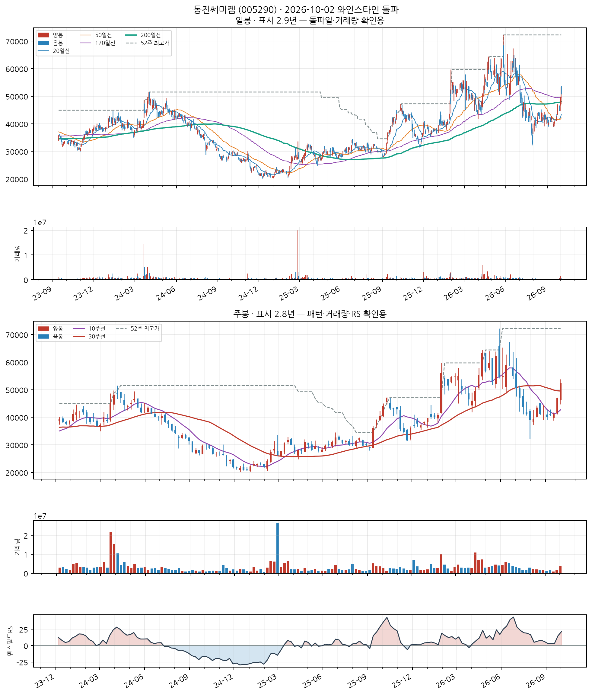
📐 차트 패턴 판정: 후보 없음 후보 없음 판정 기준(PDF)
세 패턴 모두 필수 조건을 채운 후보가 없다(가장 가까운 컵위드핸들 후보: 구조 독립성: 부모 컵(오른쪽 림 2026-06-19)의 핸들 하락(저점 2026-07-31)을 새 컵의 왼쪽 절반으로 재분할한 후보 — 자체 핸들이 아직 없다, 독립된 새 구조의 증거가 없다).
가장 강한 반증 컵위드핸들: 구조 독립성: 부모 컵(오른쪽 림 2026-06-19)의 핸들 하락(저점 2026-07-31)을 새 컵의 왼쪽 절반으로 재분할한 후보 — 자체 핸들이 아직 없다, 독립된 새 구조의 증거가 없다; 이중바닥: 두 저점 일치: 저점 차이 26.0% — 같은 지지대로 보기 어려움(10% 초과)
경쟁 후보·더 단순한 설명 더 단순한 설명: 최근 26주 상승 추세 지속(+14.1%) — 베이스 없음
추가로 필요한 데이터 장중 고저 기준 깊이(여기 수치는 주봉 종가 기준)
패턴만으로 매수 추천이나 목표 달성 확률을 만들지 않습니다. 수치 기준은 잠정치이며 라벨 데이터로 검증되지 않았습니다.
전자부품 제조업
업종 참고: RS 평균 62/99(업종 중 상위 13%) · 오늘 신호 15건 · 업종 평균이 코스닥 대비 +39.3%p(126일), 종목별 편차 ±61%p
🧪 자체 섹터 분류(실험적, 참고용): 아스플로·한솔테크닉스 등 20종목 (업종 혼재)
섹터 내 RS 순위: 15/20위 (RS 74/99)
섹터 1~3위: 아스플로(99), 한솔테크닉스(98), 심텍(97)
※ 자체 상관관계 계산(최근 1년) — 검증 시 기준업종 11개 중 8개 정확. 주 단위로 구성종목이 일부 바뀔 수 있음(주간 일치도 실측 0.53)
종가 82,900 · 거래대금 775억
거래량비 4.6x맨스필드RS +15.4
손절 77,097 | 목표 100,309 | 수량 120주
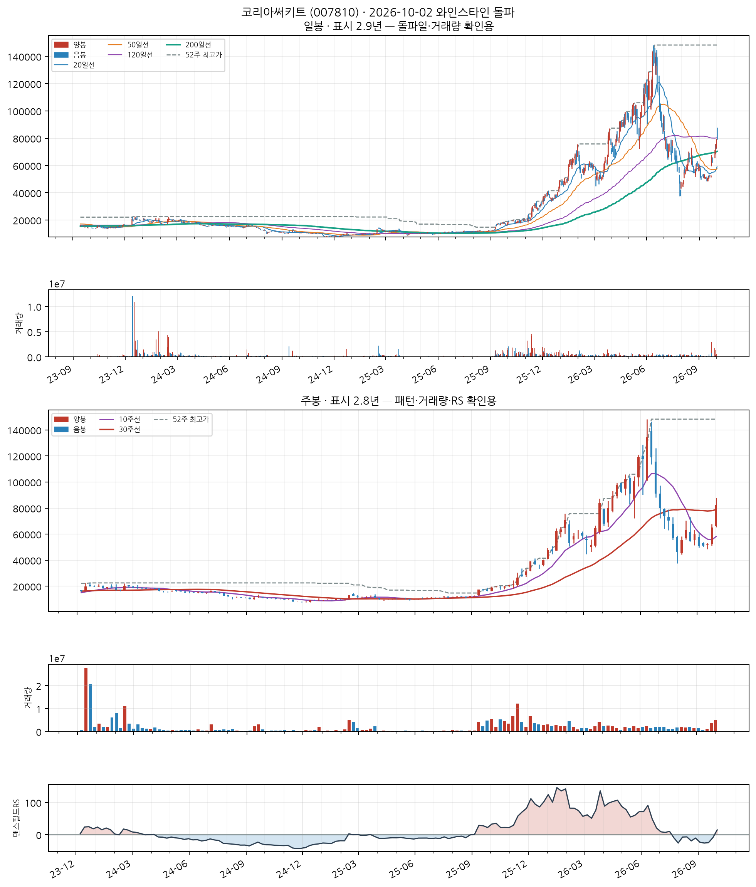
📐 차트 패턴: 약한 유사 — 이중바닥 형태 완성·미돌파 확신 낮음 판정 기준(PDF)
W 형태는 있으나 중간 고점 134,400를 아직 넘지 못했다.
가장 강한 반증 선행 추세: 선행 추세가 상승(+520.2%) — 상승 중 눌림일 수 있어 반전형 전제가 없다
경쟁 후보·더 단순한 설명 더 단순한 설명: 선행 하락이 없어 반전형이 아니라 상승 추세 중 눌림(조정)일 수 있다
측정표 (주봉 종가 기준, 판정일 2026-10-02 이후 데이터 미사용)
조건별 판정
- 미충족 선행 추세 — 선행 추세가 상승(+520.2%) — 상승 중 눌림일 수 있어 반전형 전제가 없다
- 부분충족 두 저점 일치 — 저점 차이 9.6% — 6% 초과
- 부분충족 중간 반등 — 중간 반등 189.3% — 30%를 넘어 W가 아니라 독립된 두 파동일 수 있음
- 충족 기간 — 베이스 35주 ≥ 7주
- 충족 깊이 — 베이스 깊이 34.3% ≤ 40%
- 부분충족 저점2 매도 약화 — 저점2 부근 거래량 = 저점1 부근의 1.03배
- 충족 최근성 — 마지막 구조 피벗(2026-07-31)이 9주 전
- 미충족 넥라인 돌파 — 종가가 아직 확인선 위로 안 올라옴(-38.3%)
- 판정불가 돌파 거래량 — 돌파 전
추가로 필요한 데이터 장중 고저 기준 깊이(여기 수치는 주봉 종가 기준)
패턴만으로 매수 추천이나 목표 달성 확률을 만들지 않습니다. 수치 기준은 잠정치이며 라벨 데이터로 검증되지 않았습니다.
롯데에너지머티리얼즈 (020150)
신규
KOSPI
전자부품 제조업
업종 참고: RS 평균 62/99(업종 중 상위 13%) · 오늘 신호 15건 · 업종 평균이 코스닥 대비 +39.3%p(126일), 종목별 편차 ±61%p
🧪 자체 섹터 분류(실험적, 참고용): 롯데에너지머티리얼즈·삼성SDI 등 14종목 (업종 혼재)
섹터 내 RS 순위: 1/14위 (RS 82/99)
섹터 1~3위: 롯데에너지머티리얼즈(82), 삼성SDI(81), 상신이디피(70)
※ 자체 상관관계 계산(최근 1년) — 검증 시 기준업종 11개 중 8개 정확. 주 단위로 구성종목이 일부 바뀔 수 있음(주간 일치도 실측 0.53)
종가 51,100 · 거래대금 715억
거래량비 4.5x맨스필드RS +3.3
손절 47,523 | 목표 61,831 | 수량 195주
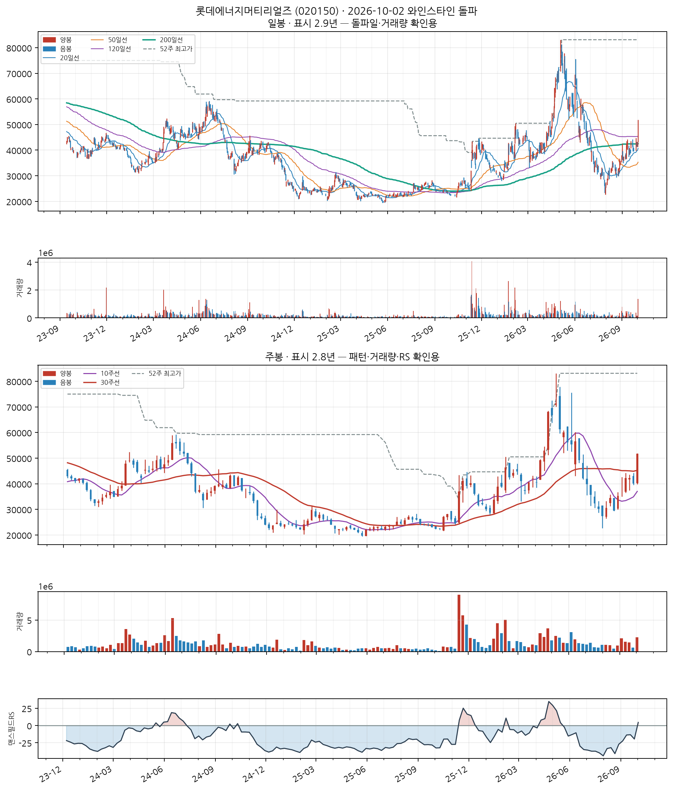
📐 차트 패턴 판정: 후보 없음 후보 없음 판정 기준(PDF)
세 패턴 모두 필수 조건을 채운 후보가 없다(가장 가까운 컵위드핸들 후보: 깊이: 컵 깊이 61.7% — 기준 12%~33%(고변동 최대 50%)를 벗어남).
가장 강한 반증 컵위드핸들: 깊이: 컵 깊이 61.7% — 기준 12%~33%(고변동 최대 50%)를 벗어남; 이중바닥: 두 저점 일치: 저점 차이 26.6% — 같은 지지대로 보기 어려움(10% 초과)
경쟁 후보·더 단순한 설명 더 단순한 설명: 최근 26주 상승 추세 지속(+26.3%) — 베이스 없음
추가로 필요한 데이터 장중 고저 기준 깊이(여기 수치는 주봉 종가 기준)
패턴만으로 매수 추천이나 목표 달성 확률을 만들지 않습니다. 수치 기준은 잠정치이며 라벨 데이터로 검증되지 않았습니다.
HLB이노베이션 (024850)
신규
KOSDAQ
전자부품 제조업
업종 참고: RS 평균 62/99(업종 중 상위 13%) · 오늘 신호 15건 · 업종 평균이 코스닥 대비 +39.3%p(126일), 종목별 편차 ±61%p
🧪 자체 섹터 분류(실험적, 참고용): 의료용품 및 기타 의약 관련제품 제조업 (HLB생명과학·HLB테라퓨틱스 등 5종목)
섹터 내 RS 순위: 4/5위 (RS 23/99)
섹터 1~3위: HLB생명과학(55), HLB테라퓨틱스(40), HLB(28)
※ 자체 상관관계 계산(최근 1년) — 검증 시 기준업종 11개 중 8개 정확. 주 단위로 구성종목이 일부 바뀔 수 있음(주간 일치도 실측 0.53)
종가 16,450 · 거래대금 21억
거래량비 8.6x맨스필드RS +27.9
손절 15,298 | 목표 19,904 | 수량 607주
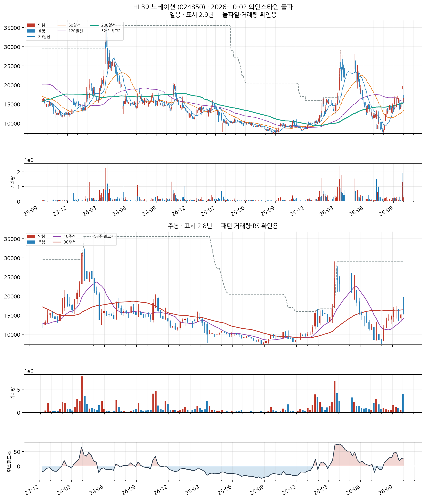
📐 차트 패턴: 약한 유사 — 역헤드앤숄더 돌파 확인 확신 낮음 판정 기준(PDF)
세 저점(머리 8,300) 뒤 넥라인(15,759, 2026-10-02)을 종가로 넘었다.
가장 강한 반증 선행 추세: 선행 추세가 상승(+51.5%) — 상승 중 눌림일 수 있어 반전형 전제가 없다
경쟁 후보·더 단순한 설명 더 단순한 설명: 선행 하락이 없어 반전형이 아니라 상승 추세 중 눌림(조정)일 수 있다
측정표 (주봉 종가 기준, 판정일 2026-10-02 이후 데이터 미사용)
조건별 판정
- 미충족 선행 추세 — 선행 추세가 상승(+51.5%) — 상승 중 눌림일 수 있어 반전형 전제가 없다
- 충족 머리 깊이 — 양 어깨 대비 최소 34.4% ≥ 3.5%
- 충족 어깨 대칭 — 어깨 높이차 8.5% ≤ 15%
- 충족 기간 — 어깨 간 33주 ≥ 6주
- 부분충족 시간 대칭 — 머리 좌우 기간 비 0.27 — 한쪽으로 치우침
- 부분충족 넥라인 기울기 — 주당 -1.3% — 기울기 큼
- 충족 오른쪽 어깨 매도 약화 — 오른쪽 어깨 부근 거래량 = 머리 부근의 0.75배
- 충족 최근성 — 돌파 주(2026-10-02)가 0주 전
- 충족 넥라인 돌파 — 2026-10-02 주 종가 16,450 > 확인선
- 충족 돌파 거래량 — 돌파 주 거래량 = 직전 10주 평균의 4.33배
추가로 필요한 데이터 장중 고저 기준 깊이(여기 수치는 주봉 종가 기준)
패턴만으로 매수 추천이나 목표 달성 확률을 만들지 않습니다. 수치 기준은 잠정치이며 라벨 데이터로 검증되지 않았습니다.
전자부품 제조업
업종 참고: RS 평균 62/99(업종 중 상위 13%) · 오늘 신호 15건 · 업종 평균이 코스닥 대비 +39.3%p(126일), 종목별 편차 ±61%p
🧪 자체 섹터 분류(실험적, 참고용): 전자부품 제조업 (코세스·RF머트리얼즈 등 11종목)
섹터 내 RS 순위: 9/11위 (RS 65/99)
섹터 1~3위: 코세스(94), RF머트리얼즈(92), 파두(92)
※ 자체 상관관계 계산(최근 1년) — 검증 시 기준업종 11개 중 8개 정확. 주 단위로 구성종목이 일부 바뀔 수 있음(주간 일치도 실측 0.53)
종가 20,000 · 거래대금 442억
거래량비 2.8x맨스필드RS +41.6
손절 18,600 | 목표 24,200 | 수량 500주
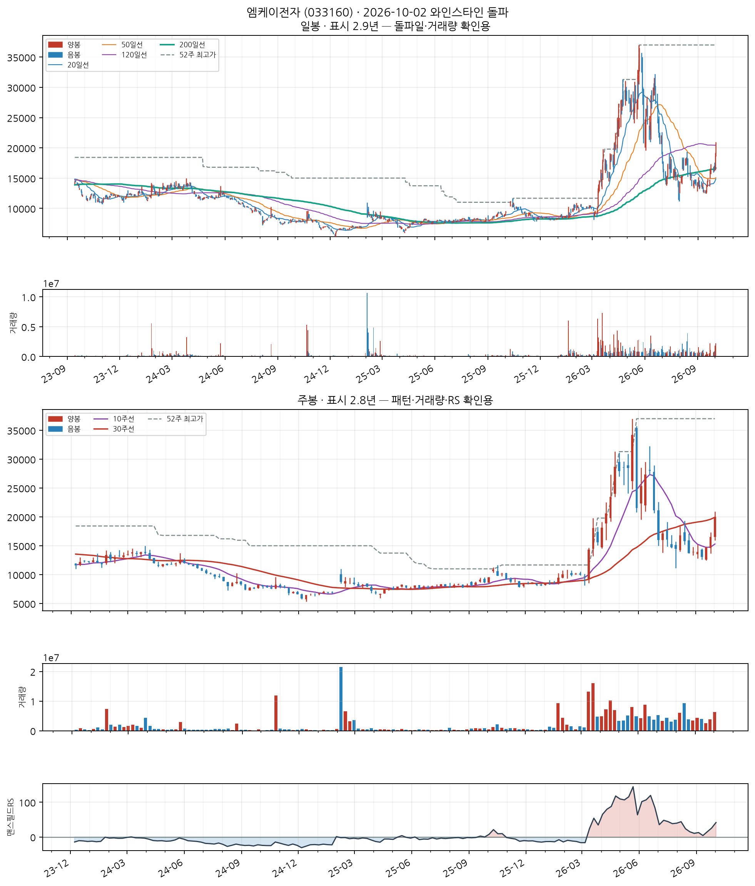
📐 차트 패턴 판정: 후보 없음 후보 없음 판정 기준(PDF)
세 패턴 모두 필수 조건을 채운 후보가 없다(가장 가까운 컵위드핸들 후보: 림 대칭: 좌우 림 차이 41.5% — 오른쪽 림이 낮음, 20% 초과).
가장 강한 반증 컵위드핸들: 림 대칭: 좌우 림 차이 41.5% — 오른쪽 림이 낮음, 20% 초과; 이중바닥: 두 저점 일치: 저점 차이 63.4% — 같은 지지대로 보기 어려움(10% 초과)
경쟁 후보·더 단순한 설명 더 단순한 설명: 최근 26주 상승 추세 지속(+10.5%) — 베이스 없음
추가로 필요한 데이터 장중 고저 기준 깊이(여기 수치는 주봉 종가 기준)
패턴만으로 매수 추천이나 목표 달성 확률을 만들지 않습니다. 수치 기준은 잠정치이며 라벨 데이터로 검증되지 않았습니다.
특수 목적용 기계 제조업
업종 참고: RS 평균 61/99(업종 중 상위 18%) · 오늘 신호 15건 · 업종 평균이 코스닥 대비 +32.7%p(126일), 종목별 편차 ±58%p
🧪 자체 섹터 분류(실험적, 참고용): 특수 목적용 기계 제조업 (GST·케이씨텍 등 20종목)
섹터 내 RS 순위: 7/20위 (RS 83/99)
섹터 1~3위: GST(96), 케이씨텍(96), 프로텍(93)
※ 자체 상관관계 계산(최근 1년) — 검증 시 기준업종 11개 중 8개 정확. 주 단위로 구성종목이 일부 바뀔 수 있음(주간 일치도 실측 0.53)
종가 10,900 · 거래대금 42억
거래량비 5.6x맨스필드RS +19.0
손절 10,137 | 목표 13,189 | 수량 917주
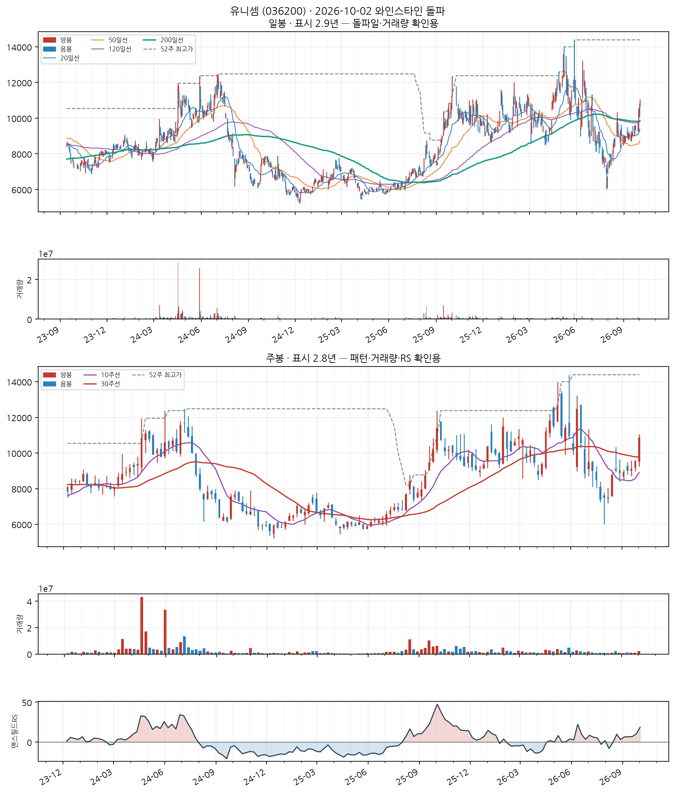
📐 차트 패턴 판정: 후보 없음 후보 없음 판정 기준(PDF)
세 패턴 모두 필수 조건을 채운 후보가 없다(가장 가까운 컵위드핸들 후보: 구조 독립성: 부모 컵(오른쪽 림 2026-05-08)의 핸들 하락(저점 2026-06-26)을 새 컵의 왼쪽 절반으로 재분할한 후보 — 자체 핸들이 아직 없다, 독립된 새 구조의 증거가 없다).
가장 강한 반증 컵위드핸들: 구조 독립성: 부모 컵(오른쪽 림 2026-05-08)의 핸들 하락(저점 2026-06-26)을 새 컵의 왼쪽 절반으로 재분할한 후보 — 자체 핸들이 아직 없다, 독립된 새 구조의 증거가 없다; 이중바닥: 두 저점 일치: 저점 차이 27.0% — 같은 지지대로 보기 어려움(10% 초과); 역헤드앤숄더: 최근성: 마지막 구조 피벗(2026-06-05)이 17주 전 — 기준 12주 이내, 지금 베이스가 아니다
경쟁 후보·더 단순한 설명 더 단순한 설명: 최근 26주 상승 추세 지속(+24.1%) — 베이스 없음
추가로 필요한 데이터 장중 고저 기준 깊이(여기 수치는 주봉 종가 기준)
패턴만으로 매수 추천이나 목표 달성 확률을 만들지 않습니다. 수치 기준은 잠정치이며 라벨 데이터로 검증되지 않았습니다.
전자부품 제조업
업종 참고: RS 평균 62/99(업종 중 상위 13%) · 오늘 신호 15건 · 업종 평균이 코스닥 대비 +39.3%p(126일), 종목별 편차 ±61%p
🧪 자체 섹터 분류(실험적, 참고용): 마이크로컨텍솔·오킨스전자 등 16종목 (업종 혼재)
섹터 내 RS 순위: 11/16위 (RS 50/99)
섹터 1~3위: 마이크로컨텍솔(97), 오킨스전자(90), 고영(86)
※ 자체 상관관계 계산(최근 1년) — 검증 시 기준업종 11개 중 8개 정확. 주 단위로 구성종목이 일부 바뀔 수 있음(주간 일치도 실측 0.53)
종가 35,700 · 거래대금 111억
거래량비 2.5x맨스필드RS +19.2
손절 33,201 | 목표 43,197 | 수량 280주
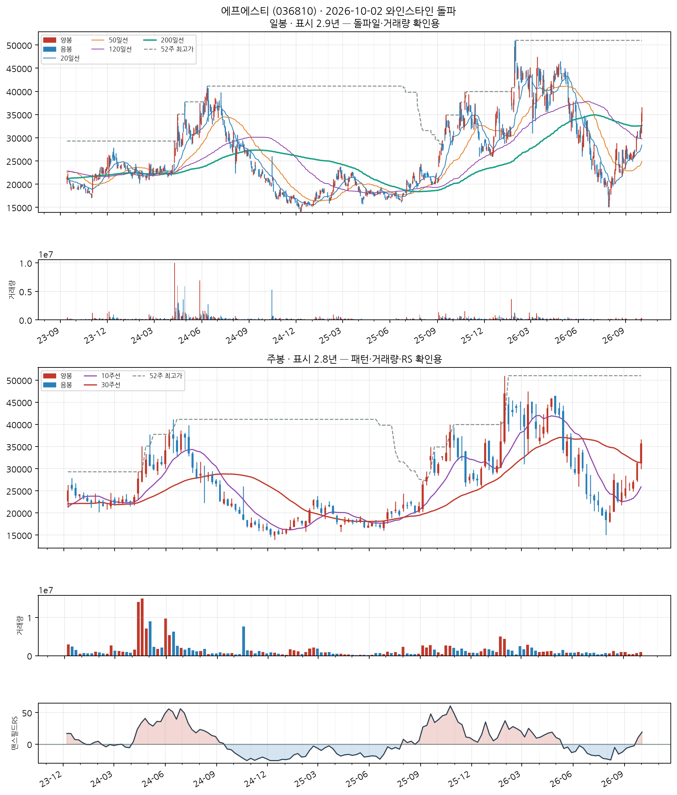
📐 차트 패턴 판정: 후보 없음 후보 없음 판정 기준(PDF)
세 패턴 모두 필수 조건을 채운 후보가 없다(가장 가까운 컵위드핸들 후보: 핸들: 핸들 저점 22,650가 컵 중간값 25,805 아래 — 핸들이 아니라 컵 재하락).
가장 강한 반증 컵위드핸들: 핸들: 핸들 저점 22,650가 컵 중간값 25,805 아래 — 핸들이 아니라 컵 재하락; 이중바닥: 두 저점 일치: 저점 차이 36.7% — 같은 지지대로 보기 어려움(10% 초과)
경쟁 후보·더 단순한 설명 더 단순한 설명: 최근 26주 하락 추세 지속(-3.5%) — 베이스 없음
추가로 필요한 데이터 장중 고저 기준 깊이(여기 수치는 주봉 종가 기준)
패턴만으로 매수 추천이나 목표 달성 확률을 만들지 않습니다. 수치 기준은 잠정치이며 라벨 데이터로 검증되지 않았습니다.
솔브레인홀딩스 (036830)
신규
KOSDAQ
회사 본부 및 경영 컨설팅 서비스업
업종 참고: RS 평균 52/99(업종 중 상위 41%) · 오늘 신호 1건 · 업종 평균이 코스피 대비 -21.3%p(126일), 종목별 편차 ±34%p
🧪 자체 섹터 분류(실험적, 참고용): 마이크로컨텍솔·오킨스전자 등 16종목 (업종 혼재)
섹터 내 RS 순위: 7/16위 (RS 61/99)
섹터 1~3위: 마이크로컨텍솔(97), 오킨스전자(90), 고영(86)
※ 자체 상관관계 계산(최근 1년) — 검증 시 기준업종 11개 중 8개 정확. 주 단위로 구성종목이 일부 바뀔 수 있음(주간 일치도 실측 0.53)
종가 48,950 · 거래대금 120억
거래량비 4.3x맨스필드RS +17.8
손절 45,524 | 목표 59,230 | 수량 204주
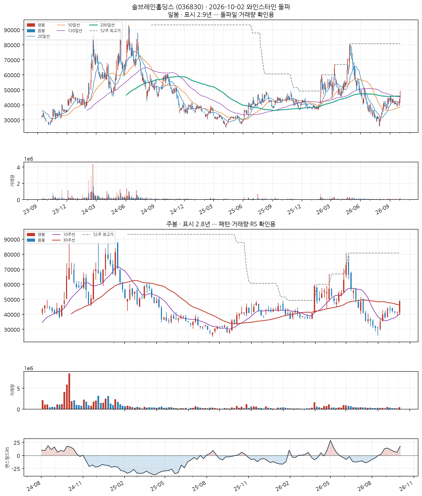
📐 차트 패턴 판정: 후보 없음 후보 없음 판정 기준(PDF)
세 패턴 모두 필수 조건을 채운 후보가 없다(가장 가까운 컵위드핸들 후보: 깊이: 컵 깊이 57.6% — 기준 12%~33%(고변동 최대 50%)를 벗어남).
가장 강한 반증 컵위드핸들: 깊이: 컵 깊이 57.6% — 기준 12%~33%(고변동 최대 50%)를 벗어남; 이중바닥: 두 저점 일치: 저점 차이 35.3% — 같은 지지대로 보기 어려움(10% 초과); 역헤드앤숄더: 최근성: 돌파가 22주 전(2026-04-30) — 기준 8주 이내, 이미 지난 베이스(확인선 대비 -45.9%)
경쟁 후보·더 단순한 설명 더 단순한 설명: 최근 26주 상승 추세 지속(+2.4%) — 베이스 없음
추가로 필요한 데이터 장중 고저 기준 깊이(여기 수치는 주봉 종가 기준)
패턴만으로 매수 추천이나 목표 달성 확률을 만들지 않습니다. 수치 기준은 잠정치이며 라벨 데이터로 검증되지 않았습니다.
기타 금융업
업종 참고: RS 평균 55/99(업종 중 상위 29%) · 오늘 신호 7건 · 업종 평균이 코스피 대비 -23.6%p(126일), 종목별 편차 ±28%p
🧪 자체 섹터 분류(실험적, 참고용): 엑스게이트·아이씨티케이 등 7종목 (업종 혼재)
섹터 내 RS 순위: 4/7위 (RS 67/99)
섹터 1~3위: 엑스게이트(98), 아이씨티케이(96), 드림시큐리티(95)
※ 자체 상관관계 계산(최근 1년) — 검증 시 기준업종 11개 중 8개 정확. 주 단위로 구성종목이 일부 바뀔 수 있음(주간 일치도 실측 0.53)
종가 11,360 · 거래대금 137억
거래량비 2.4x맨스필드RS +18.2
손절 10,565 | 목표 13,746 | 수량 880주
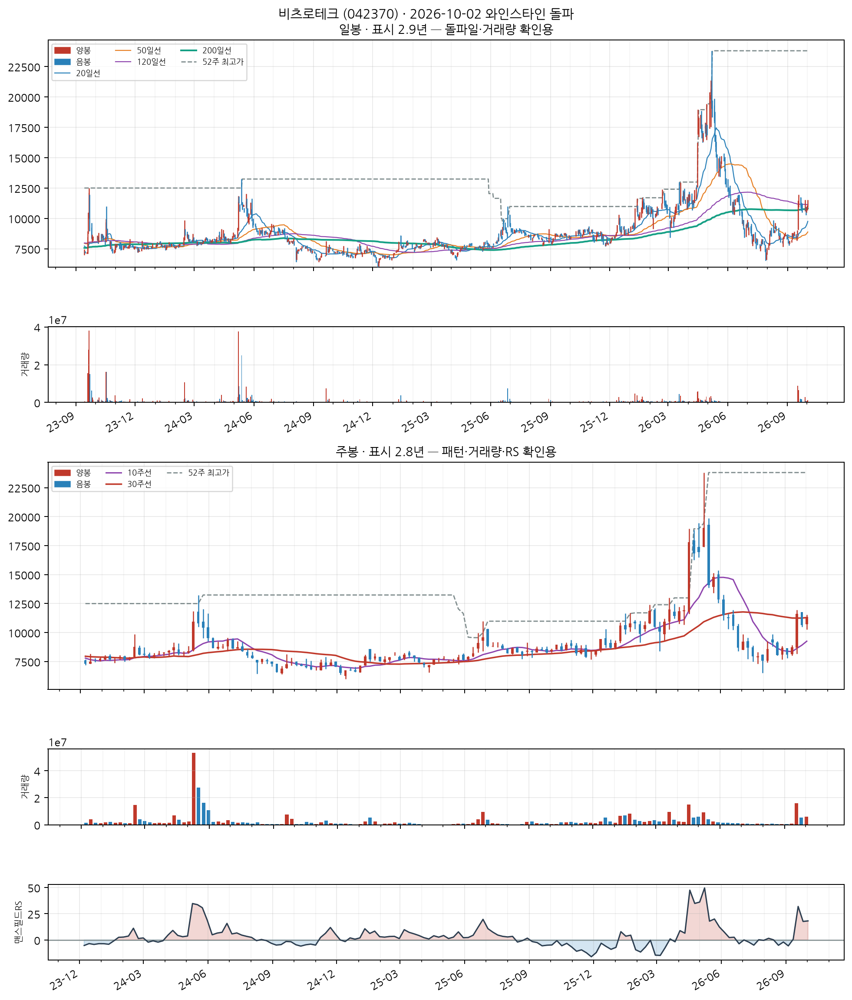
📐 차트 패턴: 약한 유사 — 이중바닥 형태 완성·미돌파 확신 낮음 판정 기준(PDF)
W 형태는 있으나 중간 고점 19,050를 아직 넘지 못했다.
가장 강한 반증 선행 추세: 선행 추세가 상승(+44.4%) — 상승 중 눌림일 수 있어 반전형 전제가 없다
경쟁 후보·더 단순한 설명 더 단순한 설명: 선행 하락이 없어 반전형이 아니라 상승 추세 중 눌림(조정)일 수 있다
측정표 (주봉 종가 기준, 판정일 2026-10-02 이후 데이터 미사용)
조건별 판정
- 미충족 선행 추세 — 선행 추세가 상승(+44.4%) — 상승 중 눌림일 수 있어 반전형 전제가 없다
- 충족 두 저점 일치 — 저점 차이 4.3% ≤ 6% · 두 번째 저점이 첫 저점을 언더컷(IBD 선호)
- 부분충족 중간 반등 — 중간 반등 151.3% — 30%를 넘어 W가 아니라 독립된 두 파동일 수 있음
- 충족 기간 — 베이스 66주 ≥ 7주
- 충족 깊이 — 베이스 깊이 21.0% ≤ 40%
- 충족 저점2 매도 약화 — 저점2 부근 거래량 = 저점1 부근의 0.47배
- 충족 최근성 — 마지막 구조 피벗(2026-07-31)이 9주 전
- 미충족 넥라인 돌파 — 종가가 아직 확인선 위로 안 올라옴(-40.4%)
- 판정불가 돌파 거래량 — 돌파 전
추가로 필요한 데이터 장중 고저 기준 깊이(여기 수치는 주봉 종가 기준)
패턴만으로 매수 추천이나 목표 달성 확률을 만들지 않습니다. 수치 기준은 잠정치이며 라벨 데이터로 검증되지 않았습니다.
HLB생명과학 (067630)
신규
KOSDAQ
의료용품 및 기타 의약 관련제품 제조업
업종 참고: RS 평균 43/99(업종 중 상위 66%) · 오늘 신호 1건 · 업종 평균이 코스닥 대비 +2.3%p(126일), 종목별 편차 ±30%p
🧪 자체 섹터 분류(실험적, 참고용): 의료용품 및 기타 의약 관련제품 제조업 (HLB생명과학·HLB테라퓨틱스 등 5종목)
섹터 내 RS 순위: 1/5위 (RS 55/99)
섹터 1~3위: HLB생명과학(55), HLB테라퓨틱스(40), HLB(28)
※ 자체 상관관계 계산(최근 1년) — 검증 시 기준업종 11개 중 8개 정확. 주 단위로 구성종목이 일부 바뀔 수 있음(주간 일치도 실측 0.53)
종가 3,575 · 거래대금 16억
거래량비 36.8x맨스필드RS +9.2
손절 3,325 | 목표 4,326 | 수량 2,797주
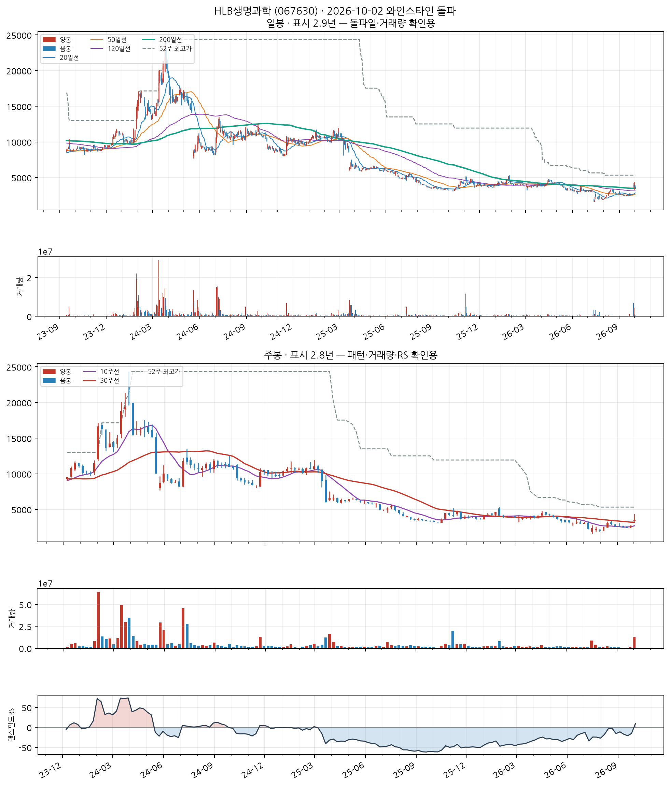
📐 차트 패턴 판정: 후보 없음 후보 없음 판정 기준(PDF)
세 패턴에 해당하는 베이스 구조가 최근 구간에 없다.
가장 강한 반증 피벗 구조 자체가 없다(뚜렷한 저점·고점 교대가 최근 26주 안에 없음).
경쟁 후보·더 단순한 설명 더 단순한 설명: 최근 26주 하락 추세 지속(-6.4%) — 베이스 없음
추가로 필요한 데이터 장중 고저 기준 깊이(여기 수치는 주봉 종가 기준)
패턴만으로 매수 추천이나 목표 달성 확률을 만들지 않습니다. 수치 기준은 잠정치이며 라벨 데이터로 검증되지 않았습니다.
특수 목적용 기계 제조업
업종 참고: RS 평균 61/99(업종 중 상위 18%) · 오늘 신호 15건 · 업종 평균이 코스닥 대비 +32.7%p(126일), 종목별 편차 ±58%p
🧪 자체 섹터 분류(실험적, 참고용): 특수 목적용 기계 제조업 (GST·케이씨텍 등 20종목)
섹터 내 RS 순위: 15/20위 (RS 68/99)
섹터 1~3위: GST(96), 케이씨텍(96), 프로텍(93)
※ 자체 상관관계 계산(최근 1년) — 검증 시 기준업종 11개 중 8개 정확. 주 단위로 구성종목이 일부 바뀔 수 있음(주간 일치도 실측 0.53)
종가 12,860 · 거래대금 41억
거래량비 5.4x맨스필드RS +15.2
손절 11,960 | 목표 15,561 | 수량 777주
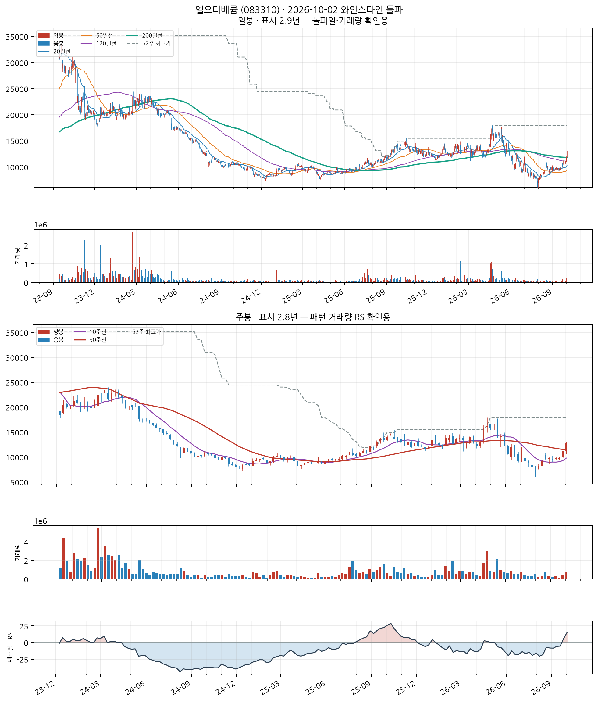
📐 차트 패턴 판정: 후보 없음 후보 없음 판정 기준(PDF)
세 패턴 모두 필수 조건을 채운 후보가 없다(가장 가까운 컵위드핸들 후보: 깊이: 컵 깊이 51.4% — 기준 12%~33%(고변동 최대 50%)를 벗어남).
가장 강한 반증 컵위드핸들: 깊이: 컵 깊이 51.4% — 기준 12%~33%(고변동 최대 50%)를 벗어남; 이중바닥: 두 저점 일치: 저점 차이 31.9% — 같은 지지대로 보기 어려움(10% 초과)
경쟁 후보·더 단순한 설명 더 단순한 설명: 최근 26주 상승 추세 지속(+6.3%) — 베이스 없음
추가로 필요한 데이터 장중 고저 기준 깊이(여기 수치는 주봉 종가 기준)
패턴만으로 매수 추천이나 목표 달성 확률을 만들지 않습니다. 수치 기준은 잠정치이며 라벨 데이터로 검증되지 않았습니다.
특수 목적용 기계 제조업
업종 참고: RS 평균 61/99(업종 중 상위 18%) · 오늘 신호 15건 · 업종 평균이 코스닥 대비 +32.7%p(126일), 종목별 편차 ±58%p
🧪 자체 섹터 분류(실험적, 참고용): 마이크로컨텍솔·오킨스전자 등 16종목 (업종 혼재)
섹터 내 RS 순위: 8/16위 (RS 59/99)
섹터 1~3위: 마이크로컨텍솔(97), 오킨스전자(90), 고영(86)
※ 자체 상관관계 계산(최근 1년) — 검증 시 기준업종 11개 중 8개 정확. 주 단위로 구성종목이 일부 바뀔 수 있음(주간 일치도 실측 0.53)
종가 15,210 · 거래대금 45억
거래량비 2.3x맨스필드RS +11.4
손절 14,145 | 목표 18,404 | 수량 657주
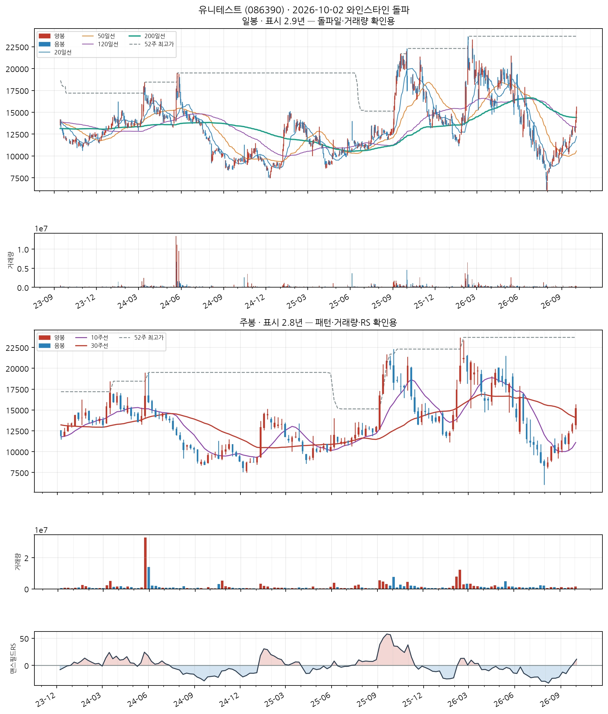
📐 차트 패턴 판정: 후보 없음 후보 없음 판정 기준(PDF)
세 패턴 모두 필수 조건을 채운 후보가 없다(가장 가까운 컵위드핸들 후보: 구조 독립성: 부모 컵(오른쪽 림 2026-04-24)의 핸들 하락(저점 2026-06-19)을 새 컵의 왼쪽 절반으로 재분할한 후보 — 자체 핸들이 아직 없다, 독립된 새 구조의 증거가 없다).
가장 강한 반증 컵위드핸들: 구조 독립성: 부모 컵(오른쪽 림 2026-04-24)의 핸들 하락(저점 2026-06-19)을 새 컵의 왼쪽 절반으로 재분할한 후보 — 자체 핸들이 아직 없다, 독립된 새 구조의 증거가 없다; 이중바닥: 두 저점 일치: 저점 차이 41.1% — 같은 지지대로 보기 어려움(10% 초과)
경쟁 후보·더 단순한 설명 더 단순한 설명: 최근 26주 하락 추세 지속(-5.5%) — 베이스 없음
추가로 필요한 데이터 장중 고저 기준 깊이(여기 수치는 주봉 종가 기준)
패턴만으로 매수 추천이나 목표 달성 확률을 만들지 않습니다. 수치 기준은 잠정치이며 라벨 데이터로 검증되지 않았습니다.
기타 화학제품 제조업
업종 참고: RS 평균 60/99(업종 중 상위 24%) · 오늘 신호 4건 · 업종 평균이 코스피 대비 -18.6%p(126일), 종목별 편차 ±28%p
🧪 자체 섹터 분류(실험적, 참고용): 제이앤티씨·두산 등 12종목 (업종 혼재)
섹터 내 RS 순위: 9/12위 (RS 63/99)
섹터 1~3위: 제이앤티씨(89), 두산(80), SKC(80)
※ 자체 상관관계 계산(최근 1년) — 검증 시 기준업종 11개 중 8개 정확. 주 단위로 구성종목이 일부 바뀔 수 있음(주간 일치도 실측 0.53)
종가 28,300 · 거래대금 126억
거래량비 8.7x맨스필드RS +4.1
손절 26,319 | 목표 34,243 | 수량 353주
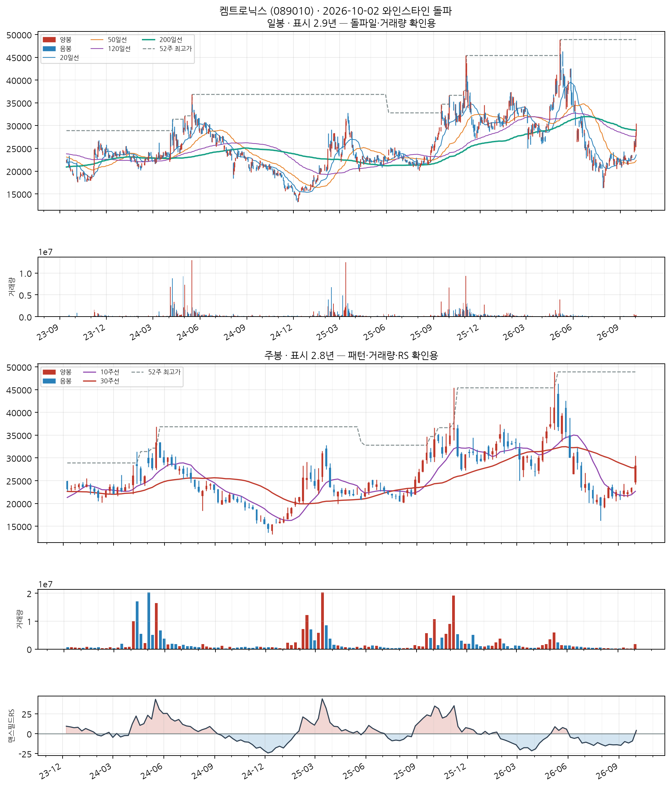
📐 차트 패턴 판정: 후보 없음 후보 없음 판정 기준(PDF)
세 패턴 모두 필수 조건을 채운 후보가 없다(가장 가까운 컵위드핸들 후보: 깊이: 컵 깊이 52.5% — 기준 12%~33%(고변동 최대 50%)를 벗어남).
가장 강한 반증 컵위드핸들: 깊이: 컵 깊이 52.5% — 기준 12%~33%(고변동 최대 50%)를 벗어남; 이중바닥: 두 저점 일치: 저점 차이 27.6% — 같은 지지대로 보기 어려움(10% 초과)
경쟁 후보·더 단순한 설명 더 단순한 설명: 최근 26주 상승 추세 지속(+5.0%) — 베이스 없음
추가로 필요한 데이터 장중 고저 기준 깊이(여기 수치는 주봉 종가 기준)
패턴만으로 매수 추천이나 목표 달성 확률을 만들지 않습니다. 수치 기준은 잠정치이며 라벨 데이터로 검증되지 않았습니다.
특수 목적용 기계 제조업
업종 참고: RS 평균 61/99(업종 중 상위 18%) · 오늘 신호 15건 · 업종 평균이 코스닥 대비 +32.7%p(126일), 종목별 편차 ±58%p
🧪 자체 섹터 분류(실험적, 참고용): HPSP·테크윙 등 6종목 (업종 혼재)
섹터 내 RS 순위: 2/6위 (RS 79/99)
섹터 1~3위: HPSP(91), 테크윙(79), 동진쎄미켐(78)
※ 자체 상관관계 계산(최근 1년) — 검증 시 기준업종 11개 중 8개 정확. 주 단위로 구성종목이 일부 바뀔 수 있음(주간 일치도 실측 0.53)
종가 55,700 · 거래대금 531억
거래량비 2.8x맨스필드RS +15.7
손절 51,801 | 목표 67,397 | 수량 179주
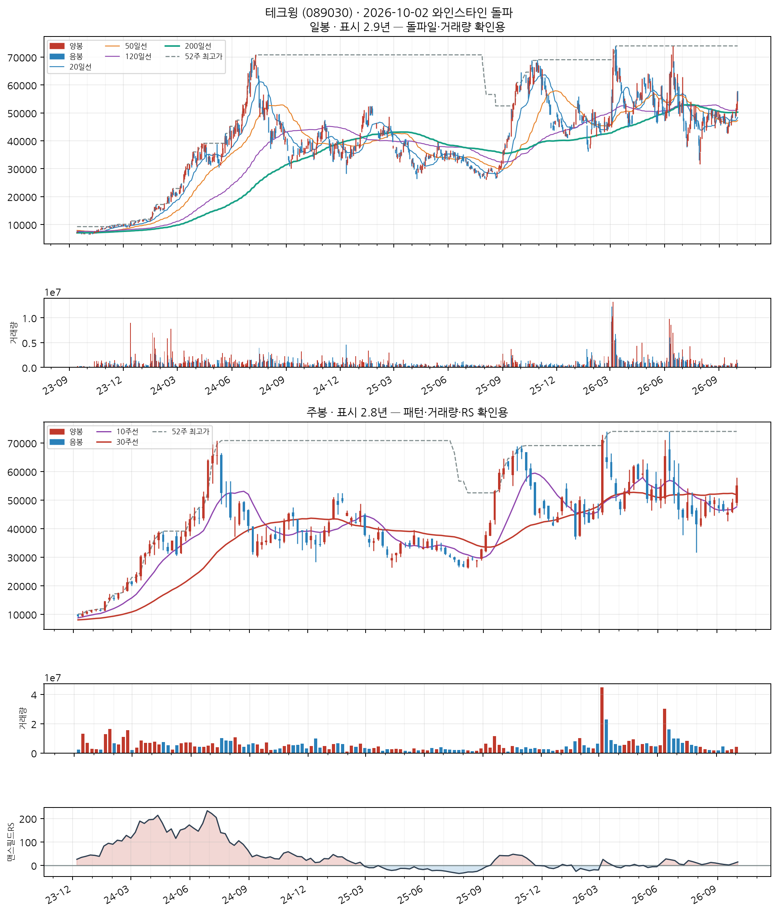
📐 차트 패턴 판정: 후보 없음 후보 없음 판정 기준(PDF)
세 패턴 모두 필수 조건을 채운 후보가 없다(가장 가까운 컵위드핸들 후보: 구조 독립성: 부모 컵(오른쪽 림 2026-06-12)의 핸들 하락(저점 2026-07-31)을 새 컵의 왼쪽 절반으로 재분할한 후보 — 자체 핸들이 아직 없다, 독립된 새 구조의 증거가 없다).
가장 강한 반증 컵위드핸들: 구조 독립성: 부모 컵(오른쪽 림 2026-06-12)의 핸들 하락(저점 2026-07-31)을 새 컵의 왼쪽 절반으로 재분할한 후보 — 자체 핸들이 아직 없다, 독립된 새 구조의 증거가 없다; 이중바닥: 두 저점 일치: 저점 차이 16.9% — 같은 지지대로 보기 어려움(10% 초과); 역헤드앤숄더: 최근성: 마지막 구조 피벗(2026-04-03)이 26주 전 — 기준 12주 이내, 지금 베이스가 아니다
경쟁 후보·더 단순한 설명 더 단순한 설명: 최근 26주 상승 추세 지속(+19.3%) — 베이스 없음
추가로 필요한 데이터 장중 고저 기준 깊이(여기 수치는 주봉 종가 기준)
패턴만으로 매수 추천이나 목표 달성 확률을 만들지 않습니다. 수치 기준은 잠정치이며 라벨 데이터로 검증되지 않았습니다.
특수 목적용 기계 제조업
업종 참고: RS 평균 61/99(업종 중 상위 18%) · 오늘 신호 15건 · 업종 평균이 코스닥 대비 +32.7%p(126일), 종목별 편차 ±58%p
🧪 자체 섹터 분류(실험적, 참고용): 전자부품 제조업 (코세스·RF머트리얼즈 등 11종목)
섹터 내 RS 순위: 1/11위 (RS 94/99)
섹터 1~3위: 코세스(94), RF머트리얼즈(92), 파두(92)
※ 자체 상관관계 계산(최근 1년) — 검증 시 기준업종 11개 중 8개 정확. 주 단위로 구성종목이 일부 바뀔 수 있음(주간 일치도 실측 0.53)
종가 36,450 · 거래대금 96억
거래량비 3.3x맨스필드RS +39.8
손절 33,898 | 목표 44,104 | 수량 274주
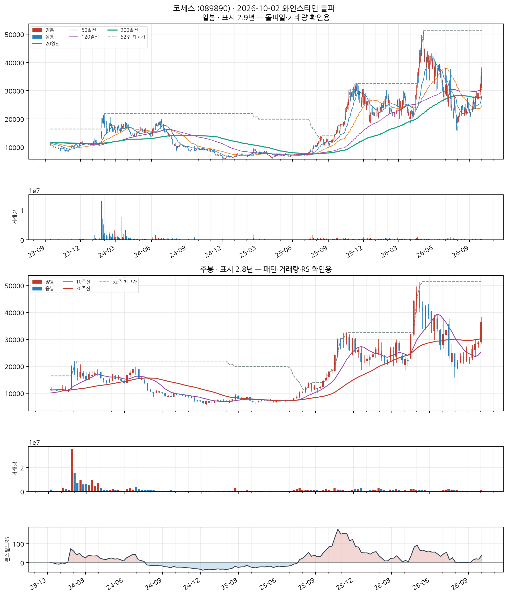
📐 차트 패턴 판정: 후보 없음 후보 없음 판정 기준(PDF)
세 패턴 모두 필수 조건을 채운 후보가 없다(가장 가까운 컵위드핸들 후보: 림 대칭: 좌우 림 차이 23.1% — 오른쪽 림이 낮음, 20% 초과).
가장 강한 반증 컵위드핸들: 림 대칭: 좌우 림 차이 23.1% — 오른쪽 림이 낮음, 20% 초과; 이중바닥: 최근성: 돌파가 24주 전(2026-04-17) — 기준 8주 이내, 이미 지난 베이스(확인선 대비 +26.3%); 역헤드앤숄더: 최근성: 돌파가 24주 전(2026-04-17) — 기준 8주 이내, 이미 지난 베이스(확인선 대비 -4.8%)
경쟁 후보·더 단순한 설명 더 단순한 설명: 최근 26주 상승 추세 지속(+61.3%) — 베이스 없음
추가로 필요한 데이터 장중 고저 기준 깊이(여기 수치는 주봉 종가 기준)
패턴만으로 매수 추천이나 목표 달성 확률을 만들지 않습니다. 수치 기준은 잠정치이며 라벨 데이터로 검증되지 않았습니다.
특수 목적용 기계 제조업
업종 참고: RS 평균 61/99(업종 중 상위 18%) · 오늘 신호 15건 · 업종 평균이 코스닥 대비 +32.7%p(126일), 종목별 편차 ±58%p
🧪 자체 섹터 분류(실험적, 참고용): 마이크로컨텍솔·오킨스전자 등 16종목 (업종 혼재)
섹터 내 RS 순위: 3/16위 (RS 86/99)
섹터 1~3위: 마이크로컨텍솔(97), 오킨스전자(90), 고영(86)
※ 자체 상관관계 계산(최근 1년) — 검증 시 기준업종 11개 중 8개 정확. 주 단위로 구성종목이 일부 바뀔 수 있음(주간 일치도 실측 0.53)
종가 34,450 · 거래대금 556억
거래량비 3.4x맨스필드RS +30.1
손절 32,038 | 목표 41,684 | 수량 290주
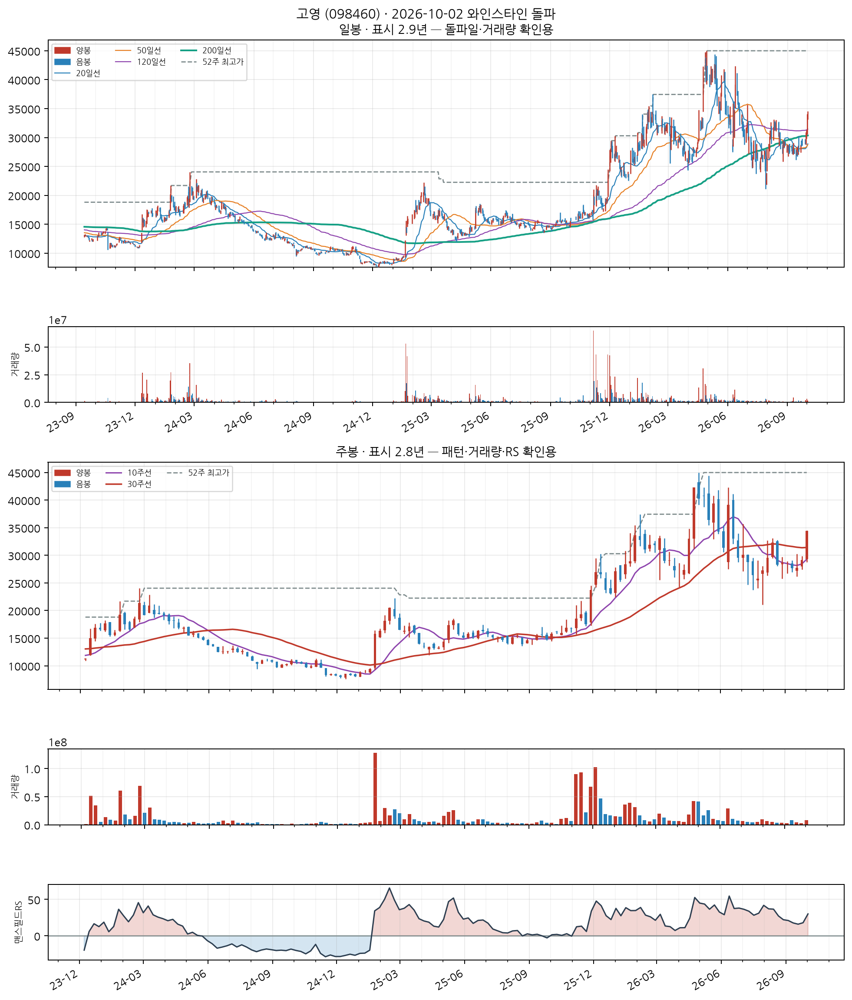
📐 차트 패턴: 약한 유사 — 이중바닥 돌파 확인 확신 낮음 판정 기준(PDF)
두 저점(25,800/27,650) 뒤 중간 고점 32,350를 종가로 넘었다.
가장 강한 반증 선행 추세: 선행 추세가 상승(+47.5%) — 상승 중 눌림일 수 있어 반전형 전제가 없다
경쟁 후보·더 단순한 설명 역헤드앤숄더(돌파 확인·확신 낮음) / 더 단순한 설명: 선행 하락이 없어 반전형이 아니라 상승 추세 중 눌림(조정)일 수 있다
측정표 (주봉 종가 기준, 판정일 2026-10-02 이후 데이터 미사용)
조건별 판정
- 미충족 선행 추세 — 선행 추세가 상승(+47.5%) — 상승 중 눌림일 수 있어 반전형 전제가 없다
- 부분충족 두 저점 일치 — 저점 차이 6.7% — 6% 초과
- 충족 중간 반등 — 중간 반등 25.4% ≥ 8%
- 충족 기간 — 베이스 16주 ≥ 7주
- 충족 깊이 — 베이스 깊이 34.1% ≤ 40%
- 충족 저점2 매도 약화 — 저점2 부근 거래량 = 저점1 부근의 0.82배
- 충족 최근성 — 돌파 주(2026-10-02)가 0주 전
- 충족 넥라인 돌파 — 2026-10-02 주 종가 34,450 > 확인선
- 충족 돌파 거래량 — 돌파 주 거래량 = 직전 10주 평균의 1.65배
추가로 필요한 데이터 장중 고저 기준 깊이(여기 수치는 주봉 종가 기준)
패턴만으로 매수 추천이나 목표 달성 확률을 만들지 않습니다. 수치 기준은 잠정치이며 라벨 데이터로 검증되지 않았습니다.
원익머트리얼즈 (104830)
신규
KOSDAQ
기초 화학물질 제조업
업종 참고: RS 평균 50/99(업종 중 상위 44%) · 오늘 신호 2건 · 업종 평균이 코스피 대비 -27.1%p(126일), 종목별 편차 ±26%p
🧪 자체 섹터 분류(실험적, 참고용): 특수 목적용 기계 제조업 (GST·케이씨텍 등 20종목)
섹터 내 RS 순위: 16/20위 (RS 66/99)
섹터 1~3위: GST(96), 케이씨텍(96), 프로텍(93)
※ 자체 상관관계 계산(최근 1년) — 검증 시 기준업종 11개 중 8개 정확. 주 단위로 구성종목이 일부 바뀔 수 있음(주간 일치도 실측 0.53)
종가 41,650 · 거래대금 39억
거래량비 4.4x맨스필드RS +18.1
손절 38,734 | 목표 50,396 | 수량 240주
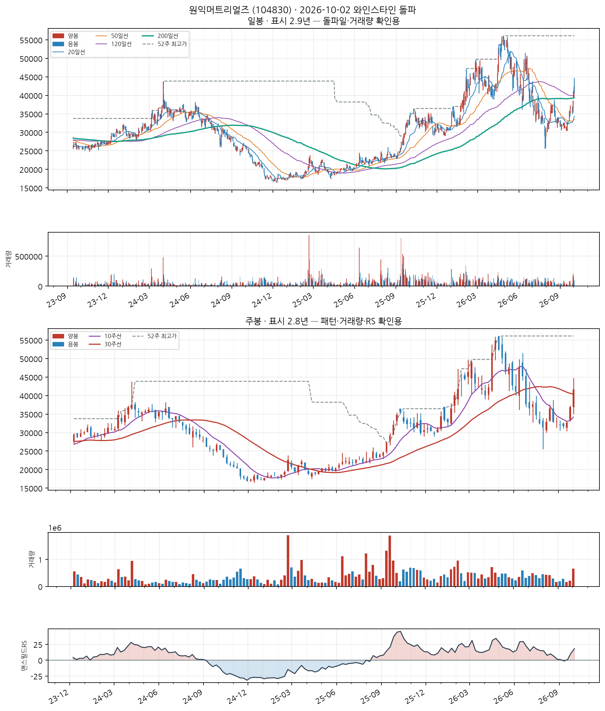
📐 차트 패턴: 약한 유사 — 이중바닥 돌파 확인 확신 낮음 판정 기준(PDF)
두 저점(31,350/31,700) 뒤 중간 고점 36,550를 종가로 넘었다.
가장 강한 반증 선행 추세: 선행 추세가 상승(+56.1%) — 상승 중 눌림일 수 있어 반전형 전제가 없다
경쟁 후보·더 단순한 설명 더 단순한 설명: 선행 하락이 없어 반전형이 아니라 상승 추세 중 눌림(조정)일 수 있다
측정표 (주봉 종가 기준, 판정일 2026-10-02 이후 데이터 미사용)
조건별 판정
- 미충족 선행 추세 — 선행 추세가 상승(+56.1%) — 상승 중 눌림일 수 있어 반전형 전제가 없다
- 충족 두 저점 일치 — 저점 차이 1.1% ≤ 6%
- 충족 중간 반등 — 중간 반등 16.6% ≥ 8%
- 충족 기간 — 베이스 16주 ≥ 7주
- 충족 깊이 — 베이스 깊이 34.1% ≤ 40%
- 충족 저점2 매도 약화 — 저점2 부근 거래량 = 저점1 부근의 0.53배
- 충족 최근성 — 돌파 주(2026-09-23)가 1주 전
- 충족 넥라인 돌파 — 2026-09-23 주 종가 36,900 > 확인선 — 돌파 후 1주 경과
- 미충족 돌파 거래량 — 돌파 주 거래량 = 직전 10주 평균의 0.70배 (기준 1.4배)
추가로 필요한 데이터 장중 고저 기준 깊이(여기 수치는 주봉 종가 기준)
패턴만으로 매수 추천이나 목표 달성 확률을 만들지 않습니다. 수치 기준은 잠정치이며 라벨 데이터로 검증되지 않았습니다.
기타 화학제품 제조업
업종 참고: RS 평균 60/99(업종 중 상위 24%) · 오늘 신호 4건 · 업종 평균이 코스피 대비 -18.6%p(126일), 종목별 편차 ±28%p
🧪 자체 섹터 분류(실험적, 참고용): 제이앤티씨·두산 등 12종목 (업종 혼재)
섹터 내 RS 순위: 4/12위 (RS 75/99)
섹터 1~3위: 제이앤티씨(89), 두산(80), SKC(80)
※ 자체 상관관계 계산(최근 1년) — 검증 시 기준업종 11개 중 8개 정확. 주 단위로 구성종목이 일부 바뀔 수 있음(주간 일치도 실측 0.53)
종가 12,480 · 거래대금 44억
거래량비 13.6x맨스필드RS +17.7
손절 11,606 | 목표 15,101 | 수량 801주
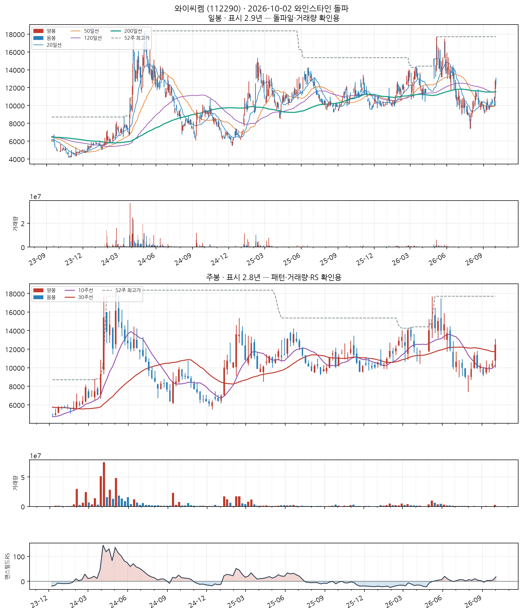
📐 차트 패턴: 약한 유사 — 이중바닥 돌파 확인 확신 낮음 판정 기준(PDF)
두 저점(9,000/9,280) 뒤 중간 고점 11,320를 종가로 넘었다.
가장 강한 반증 선행 추세: 선행 추세가 상승(+57.2%) — 상승 중 눌림일 수 있어 반전형 전제가 없다
경쟁 후보·더 단순한 설명 역헤드앤숄더(돌파 확인·확신 낮음) / 더 단순한 설명: 선행 하락이 없어 반전형이 아니라 상승 추세 중 눌림(조정)일 수 있다
측정표 (주봉 종가 기준, 판정일 2026-10-02 이후 데이터 미사용)
조건별 판정
- 미충족 선행 추세 — 선행 추세가 상승(+57.2%) — 상승 중 눌림일 수 있어 반전형 전제가 없다
- 충족 두 저점 일치 — 저점 차이 3.0% ≤ 6%
- 충족 중간 반등 — 중간 반등 25.8% ≥ 8%
- 충족 기간 — 베이스 19주 ≥ 7주
- 부분충족 깊이 — 베이스 깊이 40.1% — 40% 초과
- 충족 저점2 매도 약화 — 저점2 부근 거래량 = 저점1 부근의 0.69배
- 충족 최근성 — 돌파 주(2026-10-02)가 0주 전
- 충족 넥라인 돌파 — 2026-10-02 주 종가 12,480 > 확인선
- 충족 돌파 거래량 — 돌파 주 거래량 = 직전 10주 평균의 5.00배
추가로 필요한 데이터 장중 고저 기준 깊이(여기 수치는 주봉 종가 기준)
패턴만으로 매수 추천이나 목표 달성 확률을 만들지 않습니다. 수치 기준은 잠정치이며 라벨 데이터로 검증되지 않았습니다.
자동차 신품 부품 제조업
업종 참고: RS 평균 44/99(업종 중 상위 62%) · 오늘 신호 1건 · 업종 평균이 코스피 대비 -34.9%p(126일), 종목별 편차 ±14%p
🧪 자체 섹터 분류(실험적, 참고용): 특수 목적용 기계 제조업 (로보스타·로보티즈 등 23종목)
섹터 내 RS 순위: 5/23위 (RS 58/99)
섹터 1~3위: 로보스타(89), 로보티즈(86), 삼현(76)
※ 자체 상관관계 계산(최근 1년) — 검증 시 기준업종 11개 중 8개 정확. 주 단위로 구성종목이 일부 바뀔 수 있음(주간 일치도 실측 0.53)
종가 13,190 · 거래대금 762억
거래량비 3.2x맨스필드RS +4.0
손절 12,267 | 목표 15,960 | 수량 758주
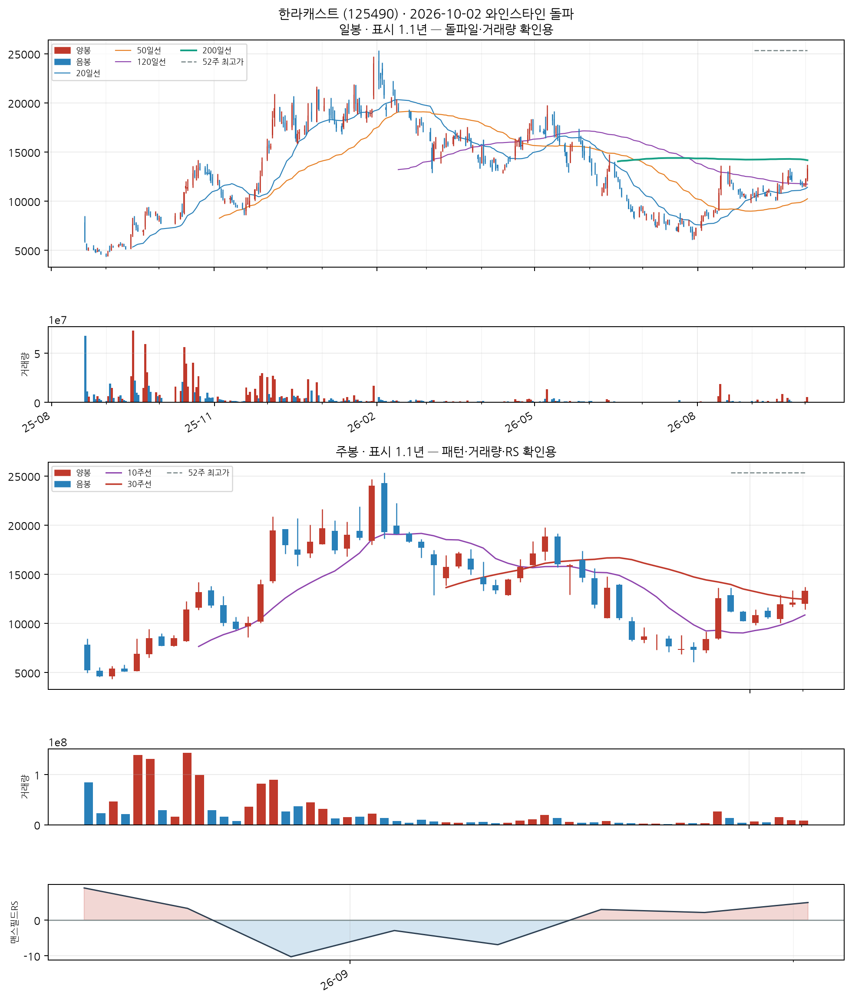
📐 차트 패턴 판정: 후보 없음 후보 없음 판정 기준(PDF)
세 패턴 모두 필수 조건을 채운 후보가 없다(가장 가까운 컵위드핸들 후보: 깊이: 컵 깊이 61.3% — 기준 12%~33%(고변동 최대 50%)를 벗어남).
가장 강한 반증 컵위드핸들: 깊이: 컵 깊이 61.3% — 기준 12%~33%(고변동 최대 50%)를 벗어남; 이중바닥: 두 저점 일치: 저점 차이 45.4% — 같은 지지대로 보기 어려움(10% 초과)
경쟁 후보·더 단순한 설명 더 단순한 설명: 최근 26주 하락 추세 지속(-5.7%) — 베이스 없음
추가로 필요한 데이터 장중 고저 기준 깊이(여기 수치는 주봉 종가 기준)
패턴만으로 매수 추천이나 목표 달성 확률을 만들지 않습니다. 수치 기준은 잠정치이며 라벨 데이터로 검증되지 않았습니다.
통신 및 방송 장비 제조업
업종 참고: RS 평균 54/99(업종 중 상위 34%) · 오늘 신호 1건 · 업종 평균이 코스닥 대비 +16.3%p(126일), 종목별 편차 ±33%p
🧪 자체 섹터 분류(실험적, 참고용): 통신 및 방송 장비 제조업 (빛과전자·대한광통신 등 10종목)
섹터 내 RS 순위: 6/10위 (RS 43/99)
섹터 1~3위: 빛과전자(89), 대한광통신(86), 광전자(86)
※ 자체 상관관계 계산(최근 1년) — 검증 시 기준업종 11개 중 8개 정확. 주 단위로 구성종목이 일부 바뀔 수 있음(주간 일치도 실측 0.53)
종가 32,650 · 거래대금 435억
거래량비 3.4x맨스필드RS +48.0
손절 30,364 | 목표 39,506 | 수량 306주
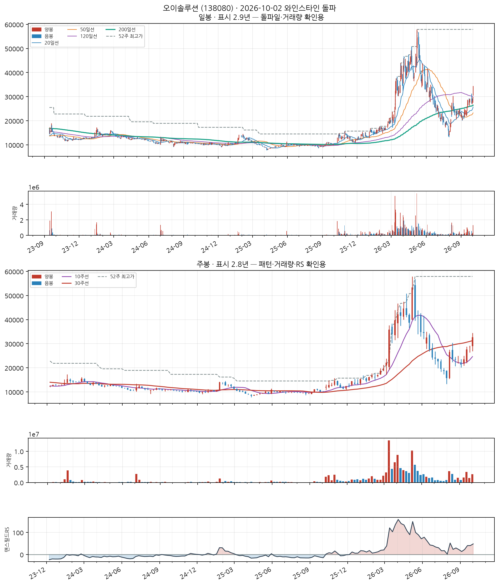
📐 차트 패턴 판정: 후보 없음 후보 없음 판정 기준(PDF)
세 패턴 모두 필수 조건을 채운 후보가 없다(가장 가까운 컵위드핸들 후보: 구조 독립성: 부모 컵(오른쪽 림 2026-08-07)의 핸들 하락(저점 2026-09-04)을 새 컵의 왼쪽 절반으로 재분할한 후보 — 자체 핸들이 아직 없다, 독립된 새 구조의 증거가 없다).
가장 강한 반증 컵위드핸들: 구조 독립성: 부모 컵(오른쪽 림 2026-08-07)의 핸들 하락(저점 2026-09-04)을 새 컵의 왼쪽 절반으로 재분할한 후보 — 자체 핸들이 아직 없다, 독립된 새 구조의 증거가 없다; 이중바닥: 두 저점 일치: 저점 차이 26.3% — 같은 지지대로 보기 어려움(10% 초과); 역헤드앤숄더: 어깨 대칭: 어깨 높이차 45.0% — 과도(25% 초과)
경쟁 후보·더 단순한 설명 더 단순한 설명: 최근 26주 하락 추세 지속(-22.5%) — 베이스 없음
추가로 필요한 데이터 장중 고저 기준 깊이(여기 수치는 주봉 종가 기준)
패턴만으로 매수 추천이나 목표 달성 확률을 만들지 않습니다. 수치 기준은 잠정치이며 라벨 데이터로 검증되지 않았습니다.
파크시스템스 (140860)
신규
KOSDAQ
측정, 시험, 항해, 제어 및 기타 정밀기기 제조업; 광학기기 제외
업종 참고: RS 평균 58/99(업종 중 상위 26%) · 오늘 신호 3건 · 업종 평균이 코스닥 대비 +36.5%p(126일), 종목별 편차 ±60%p
🧪 자체 섹터 분류(실험적, 참고용): 한국공항·SK디스커버리 등 9종목 (업종 혼재)
섹터 내 RS 순위: 3/9위 (RS 87/99)
섹터 1~3위: 한국공항(94), SK디스커버리(87), 파크시스템스(87)
※ 자체 상관관계 계산(최근 1년) — 검증 시 기준업종 11개 중 8개 정확. 주 단위로 구성종목이 일부 바뀔 수 있음(주간 일치도 실측 0.53)
종가 299,000 · 거래대금 83억
거래량비 2.4x맨스필드RS +23.9
손절 278,070 | 목표 361,790 | 수량 33주
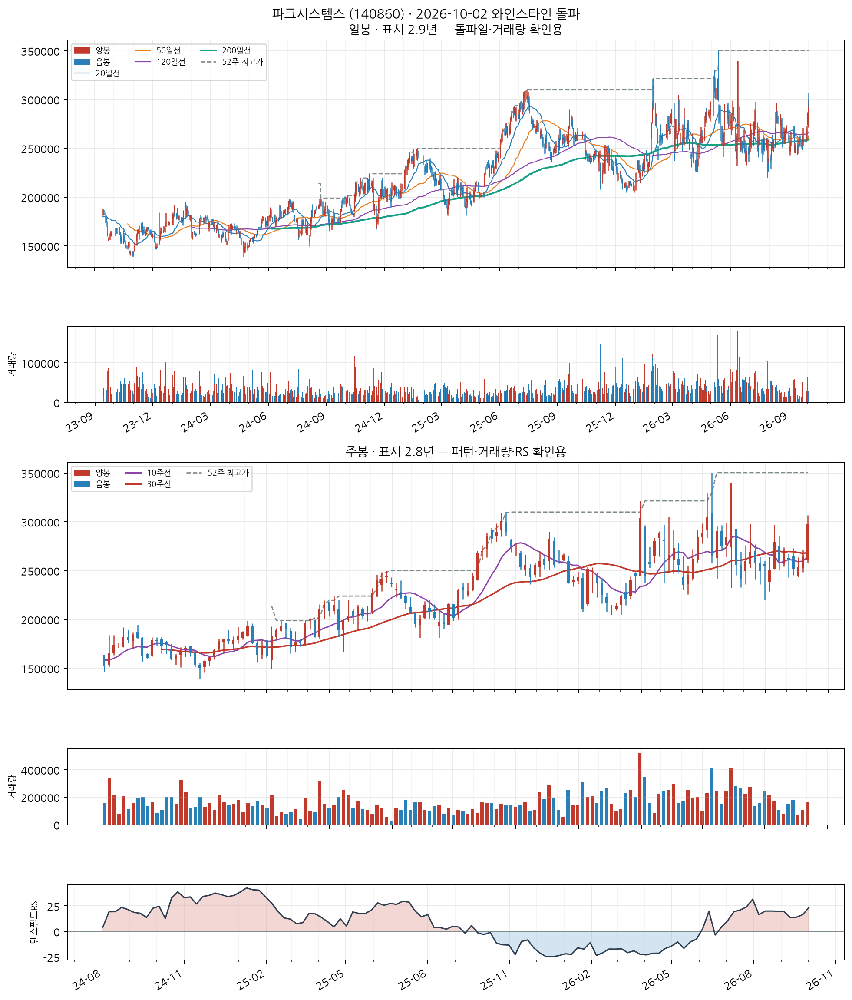
📐 차트 패턴: 약한 유사 — 이중바닥 돌파 확인 확신 낮음 판정 기준(PDF)
두 저점(241,500/252,000) 뒤 중간 고점 279,500를 종가로 넘었다.
가장 강한 반증 선행 추세: 선행 추세가 상승(+56.5%) — 상승 중 눌림일 수 있어 반전형 전제가 없다
경쟁 후보·더 단순한 설명 역헤드앤숄더(돌파 확인·확신 낮음) / 더 단순한 설명: 선행 하락이 없어 반전형이 아니라 상승 추세 중 눌림(조정)일 수 있다
측정표 (주봉 종가 기준, 판정일 2026-10-02 이후 데이터 미사용)
조건별 판정
- 미충족 선행 추세 — 선행 추세가 상승(+56.5%) — 상승 중 눌림일 수 있어 반전형 전제가 없다
- 충족 두 저점 일치 — 저점 차이 4.2% ≤ 6%
- 충족 중간 반등 — 중간 반등 15.7% ≥ 8%
- 충족 기간 — 베이스 16주 ≥ 7주
- 충족 깊이 — 베이스 깊이 28.9% ≤ 40%
- 충족 저점2 매도 약화 — 저점2 부근 거래량 = 저점1 부근의 0.52배
- 충족 최근성 — 돌파 주(2026-10-02)가 0주 전
- 충족 넥라인 돌파 — 2026-10-02 주 종가 299,000 > 확인선
- 부분충족 돌파 거래량 — 돌파 주 거래량 = 직전 10주 평균의 1.12배 (기준 1.4배)
추가로 필요한 데이터 장중 고저 기준 깊이(여기 수치는 주봉 종가 기준)
패턴만으로 매수 추천이나 목표 달성 확률을 만들지 않습니다. 수치 기준은 잠정치이며 라벨 데이터로 검증되지 않았습니다.
특수 목적용 기계 제조업
업종 참고: RS 평균 61/99(업종 중 상위 18%) · 오늘 신호 15건 · 업종 평균이 코스닥 대비 +32.7%p(126일), 종목별 편차 ±58%p
🧪 자체 섹터 분류(실험적, 참고용): 제이앤티씨·두산 등 12종목 (업종 혼재)
섹터 내 RS 순위: 7/12위 (RS 72/99)
섹터 1~3위: 제이앤티씨(89), 두산(80), SKC(80)
※ 자체 상관관계 계산(최근 1년) — 검증 시 기준업종 11개 중 8개 정확. 주 단위로 구성종목이 일부 바뀔 수 있음(주간 일치도 실측 0.53)
종가 41,050 · 거래대금 254억
거래량비 7.5x맨스필드RS +10.8
손절 38,176 | 목표 49,670 | 수량 243주
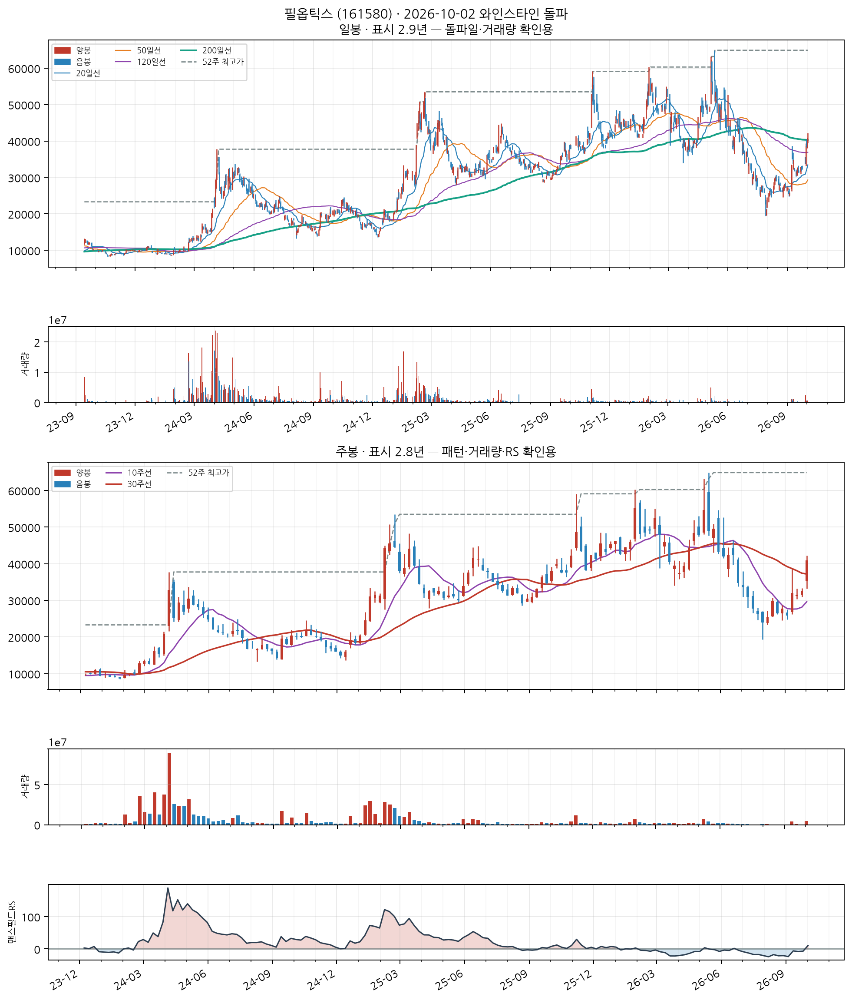
📐 차트 패턴 판정: 후보 없음 후보 없음 판정 기준(PDF)
세 패턴 모두 필수 조건을 채운 후보가 없다(가장 가까운 컵위드핸들 후보: 깊이: 컵 깊이 56.1% — 기준 12%~33%(고변동 최대 50%)를 벗어남).
가장 강한 반증 컵위드핸들: 깊이: 컵 깊이 56.1% — 기준 12%~33%(고변동 최대 50%)를 벗어남; 이중바닥: 최근성: 마지막 구조 피벗(2026-04-03)이 26주 전 — 기준 12주 이내, 지금 베이스가 아니다
경쟁 후보·더 단순한 설명 더 단순한 설명: 최근 26주 상승 추세 지속(+9.6%) — 베이스 없음
추가로 필요한 데이터 장중 고저 기준 깊이(여기 수치는 주봉 종가 기준)
패턴만으로 매수 추천이나 목표 달성 확률을 만들지 않습니다. 수치 기준은 잠정치이며 라벨 데이터로 검증되지 않았습니다.
아이쓰리시스템 (214430)
신규
KOSDAQ
전자부품 제조업
업종 참고: RS 평균 62/99(업종 중 상위 13%) · 오늘 신호 15건 · 업종 평균이 코스닥 대비 +39.3%p(126일), 종목별 편차 ±61%p
🧪 자체 섹터 분류(실험적, 참고용): 전자부품 제조업 (매커스·디케이티 등 16종목)
섹터 내 RS 순위: 9/16위 (RS 36/99)
섹터 1~3위: 매커스(88), 디케이티(88), 도우인시스(85)
※ 자체 상관관계 계산(최근 1년) — 검증 시 기준업종 11개 중 8개 정확. 주 단위로 구성종목이 일부 바뀔 수 있음(주간 일치도 실측 0.53)
종가 77,900 · 거래대금 66억
거래량비 7.6x맨스필드RS +5.2
손절 72,447 | 목표 94,259 | 수량 128주
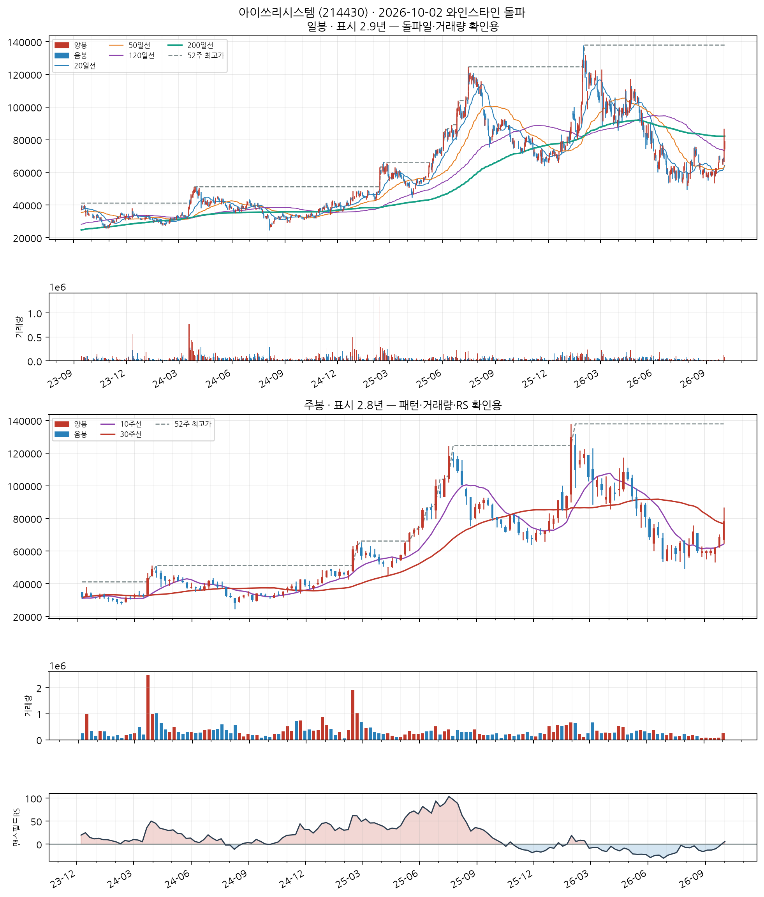
📐 차트 패턴 판정: 후보 없음 후보 없음 판정 기준(PDF)
세 패턴 모두 필수 조건을 채운 후보가 없다(가장 가까운 컵위드핸들 후보: 림 대칭: 좌우 림 차이 28.1% — 오른쪽 림이 낮음, 20% 초과).
가장 강한 반증 컵위드핸들: 림 대칭: 좌우 림 차이 28.1% — 오른쪽 림이 낮음, 20% 초과; 이중바닥: 두 저점 일치: 저점 차이 40.7% — 같은 지지대로 보기 어려움(10% 초과)
경쟁 후보·더 단순한 설명 더 단순한 설명: 최근 26주 하락 추세 지속(-21.3%) — 베이스 없음
추가로 필요한 데이터 장중 고저 기준 깊이(여기 수치는 주봉 종가 기준)
패턴만으로 매수 추천이나 목표 달성 확률을 만들지 않습니다. 수치 기준은 잠정치이며 라벨 데이터로 검증되지 않았습니다.
특수 목적용 기계 제조업
업종 참고: RS 평균 61/99(업종 중 상위 18%) · 오늘 신호 15건 · 업종 평균이 코스닥 대비 +32.7%p(126일), 종목별 편차 ±58%p
🧪 자체 섹터 분류(실험적, 참고용): 특수 목적용 기계 제조업 (엑시콘·하나마이크론 등 8종목)
섹터 내 RS 순위: 6/8위 (RS 65/99)
섹터 1~3위: 엑시콘(96), 하나마이크론(94), 에이팩트(92)
※ 자체 상관관계 계산(최근 1년) — 검증 시 기준업종 11개 중 8개 정확. 주 단위로 구성종목이 일부 바뀔 수 있음(주간 일치도 실측 0.53)
종가 15,580 · 거래대금 382억
거래량비 3.8x맨스필드RS +29.9
손절 14,489 | 목표 18,852 | 수량 641주
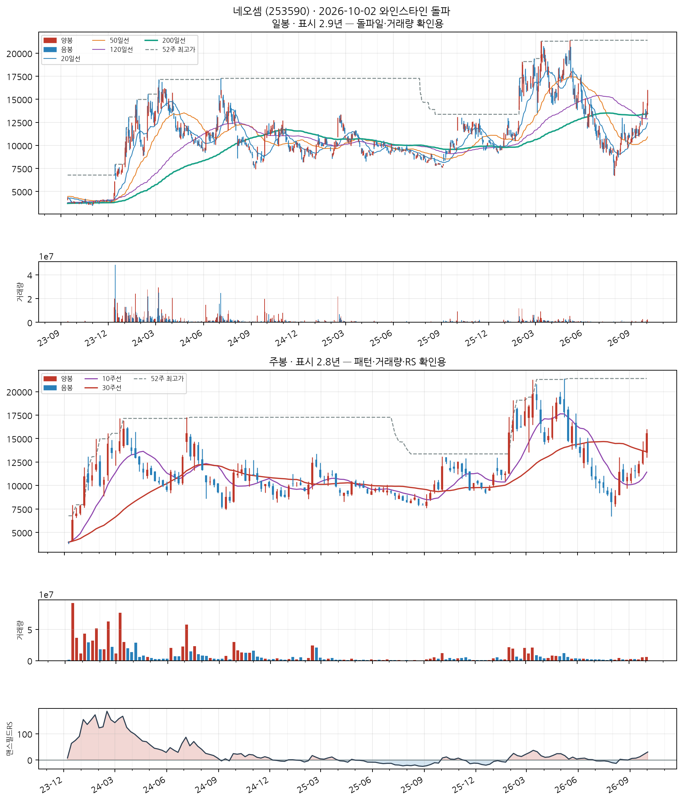
📐 차트 패턴 판정: 후보 없음 후보 없음 판정 기준(PDF)
세 패턴 모두 필수 조건을 채운 후보가 없다(가장 가까운 컵위드핸들 후보: 깊이: 컵 깊이 56.2% — 기준 12%~33%(고변동 최대 50%)를 벗어남).
가장 강한 반증 컵위드핸들: 깊이: 컵 깊이 56.2% — 기준 12%~33%(고변동 최대 50%)를 벗어남; 이중바닥: 두 저점 일치: 저점 차이 43.7% — 같은 지지대로 보기 어려움(10% 초과)
경쟁 후보·더 단순한 설명 더 단순한 설명: 최근 26주 상승 추세 지속(+6.3%) — 베이스 없음
추가로 필요한 데이터 장중 고저 기준 깊이(여기 수치는 주봉 종가 기준)
패턴만으로 매수 추천이나 목표 달성 확률을 만들지 않습니다. 수치 기준은 잠정치이며 라벨 데이터로 검증되지 않았습니다.
반도체 제조업
업종 참고: RS 평균 71/99(업종 중 상위 4%) · 오늘 신호 1건 · 업종 평균이 코스닥 대비 +42.9%p(126일), 종목별 편차 ±47%p
🧪 자체 섹터 분류(실험적, 참고용): 특수 목적용 기계 제조업 (GST·케이씨텍 등 20종목)
섹터 내 RS 순위: 18/20위 (RS 60/99)
섹터 1~3위: GST(96), 케이씨텍(96), 프로텍(93)
※ 자체 상관관계 계산(최근 1년) — 검증 시 기준업종 11개 중 8개 정확. 주 단위로 구성종목이 일부 바뀔 수 있음(주간 일치도 실측 0.53)
종가 32,350 · 거래대금 31억
거래량비 2.2x맨스필드RS +19.6
손절 30,085 | 목표 39,144 | 수량 309주
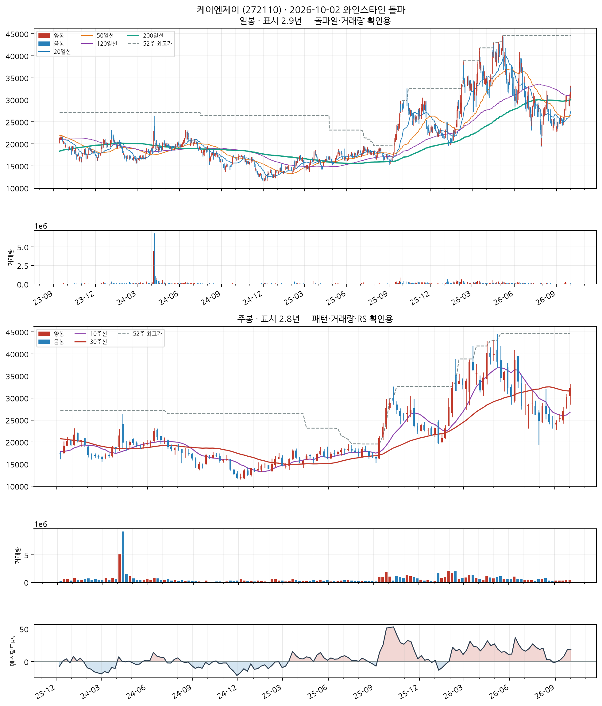
📐 차트 패턴: 약한 유사 — 컵위드핸들 형성 중 확신 낮음 판정 기준(PDF)
컵 구조(16주·깊이 36.8%)는 있으나 핸들이 아직 없다 — 형성 중.
가장 강한 반증 깊이: 컵 깊이 36.8% — 기준 12%~33% 밖(고변동 종목이라 50%까지 예외 허용)
경쟁 후보·더 단순한 설명 더 단순한 설명: 깊이 조건이 약해 단순 횡보·박스로 볼 여지가 있다(컵 깊이 36.8% — 기준 12%~33% 밖(고변동 종목이라 50%까지 예외 허용))
측정표 (주봉 종가 기준, 판정일 2026-10-02 이후 데이터 미사용)
조건별 판정
- 충족 선행 추세 — 선행 상승 +69.7% ≥ +20%
- 충족 기간 — 컵 16주 (기준 7~65주)
- 부분충족 깊이 — 컵 깊이 36.8% — 기준 12%~33% 밖(고변동 종목이라 50%까지 예외 허용)
- 부분충족 림 대칭 — 좌우 림 차이 16.2% — 12% 초과
- 충족 U자 모양 — 바닥 형태(3주 중앙값 평활): 직선 V 템플릿 오차 0.267 vs 포물선 U 템플릿 오차 0.125 → 치우침 +0.142 (V=−0.167·U=+0.167, 기각 ≤-0.05·충족 ≥+0.05) · 바닥 중심 위치 72%
- 충족 베이스 거래량 수축 — 컵 구간 평균 = 직전 16주 평균의 0.56배
- 판정불가 핸들 — 오른쪽 림 이후 봉이 없어 핸들 미형성
- 충족 최근성 — 마지막 구조 피벗(2026-10-02)이 0주 전
- 미충족 피벗 돌파 — 종가가 아직 확인선 위로 안 올라옴(+0.0%)
- 판정불가 돌파 거래량 — 돌파 전
추가로 필요한 데이터 장중 고저 기준 깊이(여기 수치는 주봉 종가 기준)
패턴만으로 매수 추천이나 목표 달성 확률을 만들지 않습니다. 수치 기준은 잠정치이며 라벨 데이터로 검증되지 않았습니다.
특수 목적용 기계 제조업
업종 참고: RS 평균 61/99(업종 중 상위 18%) · 오늘 신호 15건 · 업종 평균이 코스닥 대비 +32.7%p(126일), 종목별 편차 ±58%p
🧪 자체 섹터 분류(실험적, 참고용): 마이크로컨텍솔·오킨스전자 등 16종목 (업종 혼재)
섹터 내 RS 순위: 5/16위 (RS 74/99)
섹터 1~3위: 마이크로컨텍솔(97), 오킨스전자(90), 고영(86)
※ 자체 상관관계 계산(최근 1년) — 검증 시 기준업종 11개 중 8개 정확. 주 단위로 구성종목이 일부 바뀔 수 있음(주간 일치도 실측 0.53)
종가 60,400 · 거래대금 208억
거래량비 3.5x맨스필드RS +30.7
손절 56,172 | 목표 73,084 | 수량 165주
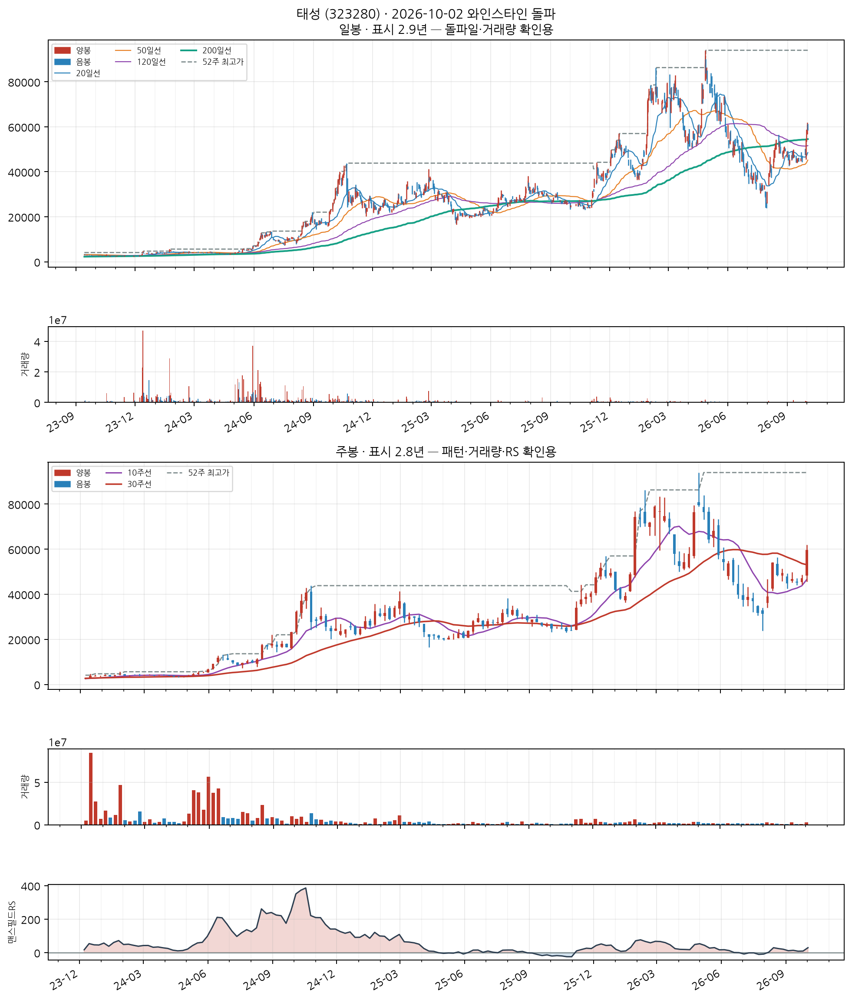
📐 차트 패턴 판정: 후보 없음 후보 없음 판정 기준(PDF)
세 패턴 모두 필수 조건을 채운 후보가 없다(가장 가까운 컵위드핸들 후보: 깊이: 컵 깊이 60.7% — 기준 12%~33%(고변동 최대 50%)를 벗어남).
가장 강한 반증 컵위드핸들: 깊이: 컵 깊이 60.7% — 기준 12%~33%(고변동 최대 50%)를 벗어남; 이중바닥: 두 저점 일치: 저점 차이 40.6% — 같은 지지대로 보기 어려움(10% 초과)
경쟁 후보·더 단순한 설명 더 단순한 설명: 최근 26주 상승 추세 지속(+14.8%) — 베이스 없음
추가로 필요한 데이터 장중 고저 기준 깊이(여기 수치는 주봉 종가 기준)
패턴만으로 매수 추천이나 목표 달성 확률을 만들지 않습니다. 수치 기준은 잠정치이며 라벨 데이터로 검증되지 않았습니다.
그외 기타 전문, 과학 및 기술 서비스업
업종 참고: RS 평균 62/99(업종 중 상위 15%) · 오늘 신호 2건 · 업종 평균이 코스닥 대비 +16.8%p(126일), 종목별 편차 ±20%p
🧪 자체 섹터 분류(실험적, 참고용): 반도체 제조업 (저스템·제주반도체 등 16종목)
섹터 내 RS 순위: 9/16위 (RS 79/99)
섹터 1~3위: 저스템(98), 제주반도체(97), 뉴파워프라즈마(97)
※ 자체 상관관계 계산(최근 1년) — 검증 시 기준업종 11개 중 8개 정확. 주 단위로 구성종목이 일부 바뀔 수 있음(주간 일치도 실측 0.53)
종가 32,750 · 거래대금 99억
거래량비 2.6x맨스필드RS +31.9
손절 30,457 | 목표 39,628 | 수량 305주
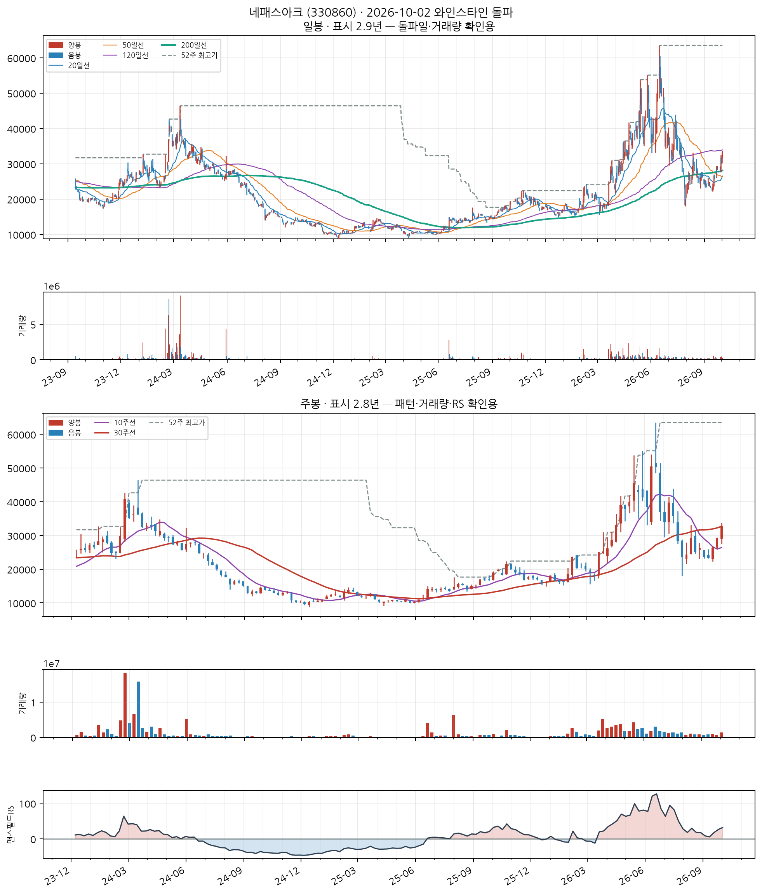
📐 차트 패턴: 약한 유사 — 이중바닥 돌파 확인 확신 낮음 판정 기준(PDF)
두 저점(23,600/23,350) 뒤 중간 고점 29,300를 종가로 넘었다.
가장 강한 반증 선행 추세: 선행 추세가 상승(+198.3%) — 상승 중 눌림일 수 있어 반전형 전제가 없다
경쟁 후보·더 단순한 설명 더 단순한 설명: 선행 하락이 없어 반전형이 아니라 상승 추세 중 눌림(조정)일 수 있다
측정표 (주봉 종가 기준, 판정일 2026-10-02 이후 데이터 미사용)
조건별 판정
- 미충족 선행 추세 — 선행 추세가 상승(+198.3%) — 상승 중 눌림일 수 있어 반전형 전제가 없다
- 충족 두 저점 일치 — 저점 차이 1.1% ≤ 6% · 두 번째 저점이 첫 저점을 언더컷(IBD 선호)
- 충족 중간 반등 — 중간 반등 25.5% ≥ 8%
- 충족 기간 — 베이스 16주 ≥ 7주
- 미충족 깊이 — 베이스 깊이 53.8% — 50% 초과
- 충족 저점2 매도 약화 — 저점2 부근 거래량 = 저점1 부근의 0.78배
- 충족 최근성 — 돌파 주(2026-10-02)가 0주 전
- 충족 넥라인 돌파 — 2026-10-02 주 종가 32,750 > 확인선
- 충족 돌파 거래량 — 돌파 주 거래량 = 직전 10주 평균의 1.56배
추가로 필요한 데이터 장중 고저 기준 깊이(여기 수치는 주봉 종가 기준)
패턴만으로 매수 추천이나 목표 달성 확률을 만들지 않습니다. 수치 기준은 잠정치이며 라벨 데이터로 검증되지 않았습니다.
기타 화학제품 제조업
업종 참고: RS 평균 60/99(업종 중 상위 24%) · 오늘 신호 4건 · 업종 평균이 코스피 대비 -18.6%p(126일), 종목별 편차 ±28%p
🧪 자체 섹터 분류(실험적, 참고용): HPSP·테크윙 등 6종목 (업종 혼재)
섹터 내 RS 순위: 4/6위 (RS 73/99)
섹터 1~3위: HPSP(91), 테크윙(79), 동진쎄미켐(78)
※ 자체 상관관계 계산(최근 1년) — 검증 시 기준업종 11개 중 8개 정확. 주 단위로 구성종목이 일부 바뀔 수 있음(주간 일치도 실측 0.53)
종가 426,500 · 거래대금 130억
거래량비 3.5x맨스필드RS +33.1
손절 396,645 | 목표 516,065 | 수량 23주
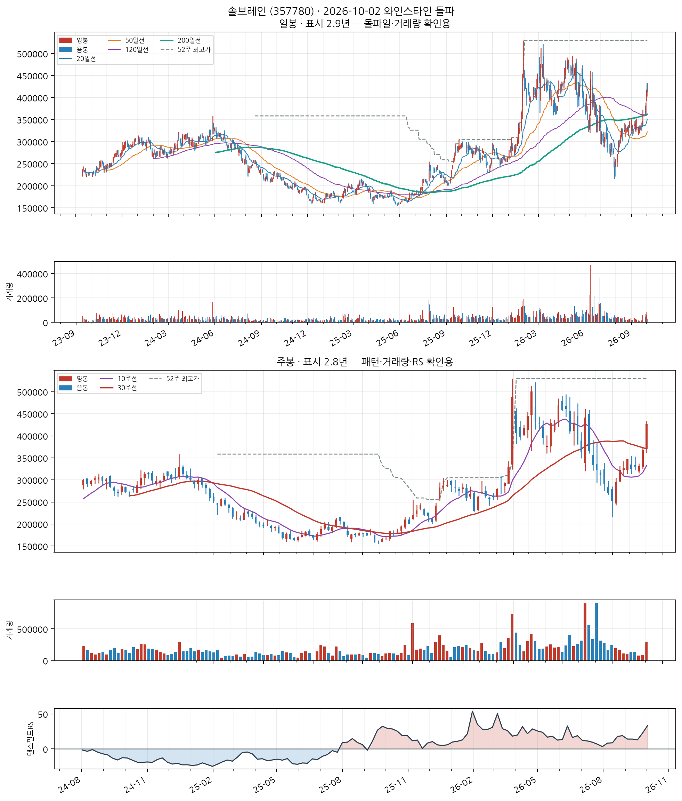
📐 차트 패턴 판정: 후보 없음 후보 없음 판정 기준(PDF)
세 패턴 모두 필수 조건을 채운 후보가 없다(가장 가까운 컵위드핸들 후보: 구조 독립성: 부모 컵(오른쪽 림 2026-06-12)의 핸들 하락(저점 2026-07-31)을 새 컵의 왼쪽 절반으로 재분할한 후보 — 자체 핸들이 아직 없다, 독립된 새 구조의 증거가 없다).
가장 강한 반증 컵위드핸들: 구조 독립성: 부모 컵(오른쪽 림 2026-06-12)의 핸들 하락(저점 2026-07-31)을 새 컵의 왼쪽 절반으로 재분할한 후보 — 자체 핸들이 아직 없다, 독립된 새 구조의 증거가 없다; 이중바닥: 두 저점 일치: 저점 차이 30.4% — 같은 지지대로 보기 어려움(10% 초과)
경쟁 후보·더 단순한 설명 더 단순한 설명: 최근 26주 상승 추세 지속(+13.3%) — 베이스 없음
추가로 필요한 데이터 장중 고저 기준 깊이(여기 수치는 주봉 종가 기준)
패턴만으로 매수 추천이나 목표 달성 확률을 만들지 않습니다. 수치 기준은 잠정치이며 라벨 데이터로 검증되지 않았습니다.
지앤비에스 에코 (382800)
신규
KOSDAQ
특수 목적용 기계 제조업
업종 참고: RS 평균 61/99(업종 중 상위 18%) · 오늘 신호 15건 · 업종 평균이 코스닥 대비 +32.7%p(126일), 종목별 편차 ±58%p
🧪 자체 섹터 분류(실험적, 참고용): 자이에스앤디·후성 등 19종목 (업종 혼재)
섹터 내 RS 순위: 7/19위 (RS 80/99)
섹터 1~3위: 자이에스앤디(97), 후성(94), 지엔씨에너지(94)
※ 자체 상관관계 계산(최근 1년) — 검증 시 기준업종 11개 중 8개 정확. 주 단위로 구성종목이 일부 바뀔 수 있음(주간 일치도 실측 0.53)
종가 6,480 · 거래대금 147억
거래량비 5.1x맨스필드RS +48.2
손절 6,026 | 목표 7,841 | 수량 1,543주
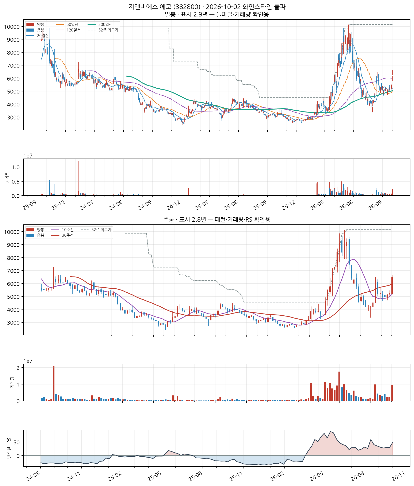
📐 차트 패턴: 약한 유사 — 역헤드앤숄더 형태 완성·미돌파 확신 낮음 판정 기준(PDF)
세 저점 구조는 있으나 넥라인(10,912)을 아직 넘지 못했다.
가장 강한 반증 선행 추세: 선행 하락 -10.5% — -15%까지 안 내려옴
경쟁 후보·더 단순한 설명 없음
측정표 (주봉 종가 기준, 판정일 2026-10-02 이후 데이터 미사용)
조건별 판정
- 부분충족 선행 추세 — 선행 하락 -10.5% — -15%까지 안 내려옴
- 충족 머리 깊이 — 양 어깨 대비 최소 16.5% ≥ 3.5%
- 부분충족 어깨 대칭 — 어깨 높이차 22.5% — 15% 초과
- 충족 기간 — 어깨 간 67주 ≥ 6주
- 충족 시간 대칭 — 머리 좌우 기간 비 1.09
- 부분충족 넥라인 기울기 — 주당 +2.1% — 기울기 큼
- 부분충족 오른쪽 어깨 매도 약화 — 오른쪽 어깨 부근 거래량 = 머리 부근의 3.84배
- 충족 최근성 — 마지막 구조 피벗(2026-07-24)이 10주 전
- 미충족 넥라인 돌파 — 종가가 아직 확인선 위로 안 올라옴(-40.6%)
- 판정불가 돌파 거래량 — 돌파 전
추가로 필요한 데이터 장중 고저 기준 깊이(여기 수치는 주봉 종가 기준)
패턴만으로 매수 추천이나 목표 달성 확률을 만들지 않습니다. 수치 기준은 잠정치이며 라벨 데이터로 검증되지 않았습니다.
그외 기타 전문, 과학 및 기술 서비스업
업종 참고: RS 평균 62/99(업종 중 상위 15%) · 오늘 신호 2건 · 업종 평균이 코스닥 대비 +16.8%p(126일), 종목별 편차 ±20%p
🧪 자체 섹터 분류(실험적, 참고용): 마이크로컨텍솔·오킨스전자 등 16종목 (업종 혼재)
섹터 내 RS 순위: 9/16위 (RS 54/99)
섹터 1~3위: 마이크로컨텍솔(97), 오킨스전자(90), 고영(86)
※ 자체 상관관계 계산(최근 1년) — 검증 시 기준업종 11개 중 8개 정확. 주 단위로 구성종목이 일부 바뀔 수 있음(주간 일치도 실측 0.53)
종가 16,540 · 거래대금 14억
거래량비 5.6x맨스필드RS +15.0
손절 15,382 | 목표 20,013 | 수량 604주
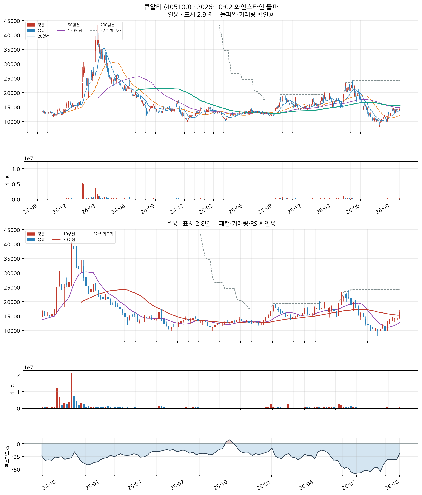
📐 차트 패턴 판정: 후보 없음 후보 없음 판정 기준(PDF)
세 패턴 모두 필수 조건을 채운 후보가 없다(가장 가까운 컵위드핸들 후보: 깊이: 컵 깊이 55.4% — 기준 12%~33%(고변동 최대 50%)를 벗어남).
가장 강한 반증 컵위드핸들: 깊이: 컵 깊이 55.4% — 기준 12%~33%(고변동 최대 50%)를 벗어남; 이중바닥: 두 저점 일치: 저점 차이 35.6% — 같은 지지대로 보기 어려움(10% 초과)
경쟁 후보·더 단순한 설명 더 단순한 설명: 최근 26주 상승 추세 지속(+9.5%) — 베이스 없음
추가로 필요한 데이터 장중 고저 기준 깊이(여기 수치는 주봉 종가 기준)
패턴만으로 매수 추천이나 목표 달성 확률을 만들지 않습니다. 수치 기준은 잠정치이며 라벨 데이터로 검증되지 않았습니다.